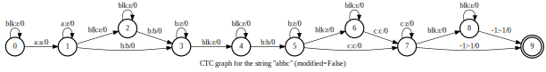
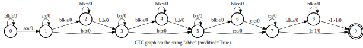

This is required when composing using a composition method that does not
treat epsilons specially, if the other FSA has epsilons in it.
Parameters
fsa (Fsa) – The input FSA. It can be either a single FSA or an FsaVec.
ret_arc_map (bool) – If False, return the resulting Fsa.
If True, return an extra arc map.
Return type
Union[Fsa, Tuple[Fsa, Tensor]]
Returns
If ret_arc_map is False, return an instance of Fsa that has an
epsilon self-loop on every non-final state.
If ret_arc_map is True, it returns an extra arc_map. arc_map[i] is the
arc index in the input fsa that corresponds to the i-th arc in the
resulting Fsa. arc_map[i] is -1 if the i-th arc in the resulting Fsa
has no counterpart in the input fsa.
Arcs are sorted by labels first, and then by dest states.
Caution
If the input fsa is already arc sorted, we return it directly.
Otherwise, a new sorted fsa is returned.
Parameters
fsa (Fsa) – The input FSA.
ret_arc_map (bool) – True to return an extra arc_map (a 1-D tensor with dtype being
torch.int32). arc_map[i] is the arc index in the input fsa that
corresponds to the i-th arc in the output Fsa.
Return type
Union[Fsa, Tuple[Fsa, Tensor]]
Returns
If ret_arc_map is False, return the sorted FSA. It is the same as the
input fsa if the input fsa is arc sorted. Otherwise, a new sorted
fsa is returned and the input fsa is NOT modified.
If ret_arc_map is True, an extra arc map is also returned.
Concatenate a list of FsaVec into a single FsaVec.
Caution
Only common tensor attributes are kept in the output FsaVec.
For non-tensor attributes, only one copy is kept in the output
FsaVec. We choose the first copy of the FsaVec that has the
lowest index in srcs.
Parameters
srcs (List[Fsa]) – A list of FsaVec. Each element MUST be an FsaVec.
Return type
Fsa
Returns
Return a single FsaVec concatenated from the input FsaVecs.
When treat_epsilons_specially is True, this function works only on CPU.
When treat_epsilons_specially is False and both a_fsa and b_fsa
are on GPU, then this function works on GPU; in this case, the two
input FSAs do not need to be arc sorted.
Note
a_fsa.aux_labels is required to be defined and it can be either
a torch.Tensor or a ragged tensor of type k2.RaggedTensor.
If it is a ragged tensor, then it requires that a_fsa.requires_grad is
False.
For both FSAs, the aux_labels attribute is interpreted as output labels,
(olabels), and the composition involves matching the olabels of a_fsa with
the ilabels of b_fsa. This is implemented by intersecting the inverse of
a_fsa (a_fsa_inv) with b_fsa, then replacing the ilabels of the result
with the original ilabels on a_fsa which are now the aux_labels of
a_fsa_inv. If b_fsa.aux_labels is not defined, b_fsa is treated as an
acceptor (as in OpenFST), i.e. its olabels and ilabels are assumed to be
the same.
Refer to k2.intersect() for how we assign the attributes of the
output FSA.
Parameters
a_fsa (Fsa) – The first input FSA. It can be either a single FSA or an FsaVec.
b_fsa (Fsa) – The second input FSA. it can be either a single FSA or an FsaVec.
treat_epsilons_specially (bool) – If True, epsilons will be treated as epsilon, meaning epsilon arcs can
match with an implicit epsilon self-loop.
If False, epsilons will be treated as real, normal symbols (to have
them treated as epsilons in this case you may have to add epsilon
self-loops to whichever of the inputs is naturally epsilon-free).
inner_labels (Optional[str]) – If specified (and if a_fsa has aux_labels), the labels that we matched
on, which would normally be discarded, will instead be copied to
this attribute name.
Caution
b_fsa has to be arc sorted if the function runs on CPU.
Return type
Fsa
Returns
The result of composing a_fsa and b_fsa. len(out_fsa.shape) is 2
if and only if the two input FSAs are single FSAs;
otherwise, len(out_fsa.shape) is 3.
We use the following rules to set the attributes of the output FsaVec:
For tensor attributes, we assume that all input FSAs have the same
attribute name and the values are concatenated.
For non-tensor attributes, if any two of the input FSAs have the same
attribute name, then we assume that their attribute values are equal and
the output FSA will inherit the attribute.
Parameters
fsas – A list of Fsa. Each element must be a single FSA.
This is a utility function that creates a (torch) sparse matrix likely
intended to represent posteriors. The likely usage is something like
(for example):
(assuming seqframe and phones were integer-valued attributes of fsa).
Parameters
rows (Tensor) – Row indexes of the sparse matrix (a torch.Tensor), which must have
values >= 0; likely fsa.seqframe. Must have row_indexes.dim == 1.
Will be converted to dtype=torch.long
cols (Tensor) – Column indexes of the sparse matrix, with the same shape as rows.
Will be converted to dtype=torch.long
values (Tensor) – Values of the sparse matrix, likely of dtype float or double, with
the same shape as rows and cols.
size (Optional[Tuple[int, int]]) – Optional. If not None, it is assumed to be a tuple containing
(num_frames, highest_phone_plus_one)
min_col_index (Optional[int]) – If provided, before the sparse tensor is constructed we will filter out
elements with cols[i] < min_col_index. Will likely be 0 or 1, if
set. This is necessary if col_indexes may have values less than 0,
or if you want to filter out 0 values (e.g. as representing blanks).
Returns
Returns a torch.Tensor that is sparse with coo (coordinate) format,
i.e. layout=torch.sparse_coo (which is actually the only sparse format
that torch currently supports).
A list of list-of-integers, e..g, [ [1, 2], [1, 2, 3] ]
An instance of k2.RaggedTensor.
Must have num_axes == 2.
standard – Option to specify the type of CTC topology: “standard” or “simplified”,
where the “standard” one makes the blank mandatory between a pair of
identical symbols. Default True.
device (Union[device, str, None]) – Optional. It can be either a string (e.g., ‘cpu’, ‘cuda:0’) or a
torch.device.
By default, the returned FSA is on CPU.
If symbols is an instance of k2.RaggedTensor, the returned
FSA will on the same device as k2.RaggedTensor.
Return type
Fsa
Returns
An FsaVec containing the returned ctc graphs, with “Dim0()” the same as
“len(symbols)”(List[List[int]]) or “dim0”(k2.RaggedTensor)
1#!/usr/bin/env python3 2 3importk2 4 5isym=k2.SymbolTable.from_str(''' 6blk 0 7a 1 8b 2 9c 310''')1112osym=k2.SymbolTable.from_str('''13a 114b 215c 316''')1718fsa=k2.ctc_graph([[1,2,2,3]],modified=False)19fsa_modified=k2.ctc_graph([[1,2,2,3]],modified=True)2021fsa.labels_sym=isym22fsa.aux_labels_sym=osym2324fsa_modified.labels_sym=isym25fsa_modified.aux_labels_sym=osym2627# fsa is an FsaVec, so we use fsa[0] to visualize the first Fsa28fsa[0].draw('ctc_graph.svg',29title='CTC graph for the string "abbc" (modified=False)')30fsa_modified[0].draw('modified_ctc_graph.svg',31title='CTC graph for the string "abbc" (modified=True)')

Fig. 18 Note: There is a mandatory blank between state 3 and 5.

Fig. 19 Note: There is no mandatory blank between state 3 and 5.
Example 2 Construct a CTC graph using composition
Listing 14 Construct a CTC graph using composition
1#!/usr/bin/env python3 2 3# Construct a CTC graph by intersection 4 5importk2 6 7isym=k2.SymbolTable.from_str(''' 8blk 0 9a 110b 211c 312''')1314osym=k2.SymbolTable.from_str('''15a 116b 217c 318''')1920linear_fsa=k2.linear_fsa([1,2,2,3])21linear_fsa.labels_sym=isym2223ctc_topo=k2.ctc_topo(max_token=3,modified=False)24ctc_topo_modified=k2.ctc_topo(max_token=3,modified=True)2526ctc_topo.labels_sym=isym27ctc_topo.aux_labels_sym=osym2829ctc_topo_modified.labels_sym=isym30ctc_topo_modified.aux_labels_sym=osym3132ctc_graph=k2.compose(ctc_topo,linear_fsa)33ctc_graph_modified=k2.compose(ctc_topo_modified,linear_fsa)3435linear_fsa.draw('linear_fsa.svg',title='Linear FSA of the string "abbc"')36ctc_topo.draw('ctc_topo.svg',title='CTC topology')37ctc_topo_modified.draw('ctc_topo_modified.svg',title='Modified CTC topology')3839ctc_graph.draw('ctc_topo_compose_linear_fsa.svg',40title='k2.compose(ctc_topo, linear_fsa)')4142ctc_graph_modified.draw('ctc_topo_modified_compose_linear_fsa.svg',43title='k2.compose(ctc_topo_modified, linear_fsa)')
reduction (Literal[‘none’, ‘mean’, ‘sum’]) – Specifies the reduction to apply to the output: ‘none’ | ‘mean’ | ‘sum’.
‘none’: no reduction will be applied, ‘mean’: the output losses will be
divided by the target lengths and then the mean over the batch is taken.
‘sum’: sum the output losses over batches.
use_double_scores (bool) – True to use double precision floating point in computing
the total scores. False to use single precision.
target_lengths (Optional[Tensor]) – Used only when reduction is mean. It is a 1-D tensor of batch
size representing lengths of the targets, e.g., number of phones or
number of word pieces in a sentence.
Return type
Tensor
Returns
If reduction is none, return a 1-D tensor with size equal to batch
size. If reduction is mean or sum, return a scalar.
A token which appears once on the right side (i.e. olabels) may
appear multiple times on the left side (ilabels), possibly with
epsilons in between.
When 0 appears on the left side, it represents the blank symbol;
when it appears on the right side, it indicates an epsilon. That
is, 0 has two meanings here.
A standard CTC topology is the conventional one, where there
is a mandatory blank between two repeated neighboring symbols.
A non-standard, i.e., modified CTC topology, imposes no such constraint.
max_token (int) – The maximum token ID (inclusive). We assume that token IDs
are contiguous (from 1 to max_token). 0 represents blank.
modified (bool) – If False, create a standard CTC topology. Otherwise, create a
modified CTC topology.
device (Union[device, str, None]) – Optional. It can be either a string (e.g., ‘cpu’,
‘cuda:0’) or a torch.device.
If it is None, then the returned FSA is on CPU.
Return type
Fsa
Returns
Return either a standard or a modified CTC topology as an FSA
depending on whether standard is True or False.
Any weight_pushing_type value other than kNoWeightPushing causes
the ‘arc_derivs’ to not accurately reflect the real derivatives,
although this will not matter as long as the derivatives ultimately
derive from FSA operations such as getting total scores or
arc posteriors, which are insensitive to pushing.
Parameters
fsa (Fsa) – The input FSA. It can be either a single FSA or an FsaVec.
Must be connected. It’s also expected to be epsilon-free,
but this is not checked; in any case,
epsilon will be treated as a normal symbol.
An enum value that determines what kind of weight pushing is desired,
default kNoWeightPushing.
kTropicalWeightPushing:
use tropical semiring (actually, max on scores) for weight pushing.
kLogWeightPushing:
use log semiring (actually, log-sum on score) for weight pushing
kNoWeightPushing:
do no weight pushing; this will cause some delay in scores being
emitted, and the weights created in this way will correspond
exactly to those that would be produced by the arc_derivs.
For decoding graph creation, we recommend kLogSumWeightPushing.
Return type
Fsa
Returns
The resulting Fsa, it’s equivalent to the input fsa under
tropical semiring but will be deterministic.
It will be the same as the input fsa if the input
fsa has property kFsaPropertiesArcSortedAndDeterministic.
Otherwise, a new deterministic fsa is returned and the
input fsa is NOT modified.
Prune the output of encoder(am) and prediction network(lm) with ranges
generated by get_rnnt_prune_ranges.
Parameters
am (Tensor) – The encoder output, with shape (B, T, encoder_dim)
lm (Tensor) – The prediction network output, with shape (B, S + 1, decoder_dim)
ranges (Tensor) – A tensor containing the symbol indexes for each frame that we want to
keep. Its shape is (B, T, s_range), see the docs in
get_rnnt_prune_ranges for more details of this tensor.
Return type
Tuple[Tensor, Tensor]
Returns
Return the pruned am and lm with shape (B, T, s_range, C)
Turn ragged labels attached to this FSA into linear (Tensor) labels,
expanding arcs into sequences of arcs as necessary to achieve this.
Supports autograd. If fsas had no ragged attributes, returns fsas
itself.
Caution
This function will ensure that for final-arcs in the returned
fsa, the corresponding labels for all ragged attributes are -1; it will
add an extra arc at the end if necessary to ensure this, if the
original ragged attributes did not have -1 as their final element on
final-arcs (note: our intention is that -1’s on final arcs, like filler
symbols, are removed when making attributes ragged; this is what
fsa_from_unary_function_ragged() does if remove_filler==True (the
default).
Parameters
fsas (Fsa) – The source Fsa
ret_arc_map (bool) – If true, will return a pair (new_fsas, arc_map)
with arc_map a tensor of int32 that maps from arcs in the
result to arcs in fsas, with -1’s for newly created arcs.
If false, just returns new_fsas.
ragged_attribute_names (Optional[List[str]]) – If specified, just this list of ragged
attributes will be expanded to linear tensor attributes, and
the rest will stay ragged.
Extract aux_labels from the best-path FSAs and remove 0s and -1s.
:type best_paths: Fsa
:param best_paths: An Fsa with best_paths.arcs.num_axes() == 3, i.e.
containing multiple FSAs, which is expected to be the result
of shortest_path (otherwise the returned values won’t
be meaningful).
Return type
List[List[int]]
Returns
Returns a list of lists of int, containing the label sequences we
decoded.
For “query” sentences, this function gets the mean and variance of
scores from the best matching words-in-context in a set of provided “key”
sentences. This matching process matches the word and the words preceding
it, looking for the highest-order match it can find (it’s intended for
approximating the scores of models that see only left-context,
like language models). The intended application is in estimating the scores
of hypothesized transcripts, when we have actually computed the scores for
only a subset of the hypotheses.
Caution
This function only runs on CPU for now.
Parameters
tokens (RaggedTensor) –
A ragged tensor of int32_t with 2 or 3 axes. If 2 axes, this represents
a collection of key and query sequences. If 3 axes, this represents a
set of such collections.
where the words would actually be represented as integers,
The eos symbol is required if this code is to work as intended
(otherwise this code will not be able to recognize when we have reached
the beginnings of sentences when comparing histories).
bos symbols are allowed but not required.
scores (Tensor) – A one dim torch.tensor with scores.size() == tokens.NumElements(),
this is the item for which we are requesting best-matching values
(as means and variances in case there are multiple best matches).
In our anticipated use, these would represent scores of words in the
sentences, but they could represent anything.
counts (Tensor) – An one dim torch.tensor with counts.size() == tokens.NumElements(),
containing 1 for words that are considered “keys” and 0 for
words that are considered “queries”. Typically some entire
sentences will be keys and others will be queries.
eos (int) – The value of the eos (end of sentence) symbol; internally, this
is used as an extra padding value before the first sentence in each
collection, so that it can act like a “bos” symbol.
min_token (int) – The lowest possible token value, including the bos
symbol (e.g., might be -1).
max_token (int) – The maximum possible token value. Be careful not to
set this too large the implementation contains a part which
takes time and space O(max_token - min_token).
max_order (int) – The maximum n-gram order to ever return in the
ngram_order output; the output will be the minimum of max_order
and the actual order matched; or max_order if we matched all the
way to the beginning of both sentences. The main reason this is
needed is that we need a finite number to return at the
beginning of sentences.
Return type
Tuple[Tensor, Tensor, Tensor, Tensor]
Returns
Returns a tuple of four torch.tensor (mean, var, counts_out, ngram_order)
mean:
For query positions, will contain the mean of the scores at the
best matching key positions, or zero if that is undefined because
there are no key positions at all. For key positions,
you can treat the output as being undefined (actually they
are treated the same as queries, but won’t match with only
themselves because we don’t match at singleton intervals).
var:
Like mean, but contains the (centered) variance
of the best matching positions.
counts_out:
The number of key positions that contributed to the mean
and var statistics. This should only be zero if counts
was all zero.
ngram_order:
The n-gram order corresponding to the best matching
positions found at each query position, up to a maximum of
max_order; will be max_order if we matched all
the way to the beginning of a sentence.
Get the decoding lattice from a decoding graph and log_softmax output.
:type log_prob: Tensor
:param log_prob: Output from a log_softmax layer of shape (N,T,C).
:type log_prob_len: Tensor
:param log_prob_len: A tensor of shape (N,) containing number of valid frames from
log_prob before padding.
Parameters
decoding_graph (Fsa) – An Fsa, the decoding graph. It can be either an HLG or an H.
You can use ctc_topo() to build an H.
search_beam (float) – Decoding beam, e.g. 20. Smaller is faster, larger is more exact
(less pruning). This is the default value; it may be modified by
min_active_states and max_active_states.
output_beam (float) – Beam to prune output, similar to lattice-beam in Kaldi. Relative
to best path of output.
min_active_states (int) – Minimum number of FSA states that are allowed to be active on any given
frame for any given intersection/composition task. This is advisory,
in that it will try not to have fewer than this number active.
Set it to zero if there is no constraint.
max_active_states (int) – Maximum number of FSA states that are allowed to be active on any given
frame for any given intersection/composition task. This is advisory,
in that it will try not to exceed that but may not always succeed.
You can use a very large number if no constraint is needed.
subsampling_factor (int) – The subsampling factor of the model.
Return type
Fsa
Returns
An FsaVec containing the decoding result. It has axes [utt][state][arc].
Reduces RNN-T problem (the simple case, where joiner network is just
addition), to a compact, standard form that can then be given
(with boundaries) to mutual_information_recursion().
This function is called from rnnt_loss_simple(), but may be useful for
other purposes.
Parameters
lm (Tensor) –
Language model part of un-normalized logprobs of symbols, to be added to
acoustic model part before normalizing. Of shape:
[B][S+1][C]
where B is the batch size, S is the maximum sequence length of
the symbol sequence, possibly including the EOS symbol; and
C is size of the symbol vocabulary, including the termination/next-frame
symbol.
Conceptually, lm[b][s] is a vector of length [C] representing the
“language model” part of the un-normalized logprobs of symbols,
given all symbols earlier than s in the sequence. The reason
we still need this for position S is that we may still be emitting
the termination/next-frame symbol at this point.
am (Tensor) –
Acoustic-model part of un-normalized logprobs of symbols, to be added
to language-model part before normalizing. Of shape:
[B][T][C]
where B is the batch size, T is the maximum sequence length of
the acoustic sequences (in frames); and C is size of the symbol
vocabulary, including the termination/next-frame symbol. It reflects
the “acoustic” part of the probability of any given symbol appearing
next on this frame.
symbols (Tensor) – A LongTensor of shape [B][S], containing the symbols at each position
of the sequence.
termination_symbol (int) – The identity of the termination symbol, must be in {0..C-1}
boundary (Optional[Tensor]) – a optional LongTensor of shape [B, 4] with elements interpreted as
[begin_symbol, begin_frame, end_symbol, end_frame] that is treated as
[0, 0, S, T]
if boundary is not supplied.
Most likely you will want begin_symbol and begin_frame to be zero.
rnnt_type (str) –
Specifies the type of rnnt paths: regular, modified or constrained.
regular: The regular rnnt that taking you to the next frame only if
emitting a blank (i.e., emitting a symbol does not take you
to the next frame).
modified: A modified version of rnnt that will take you to the next
frame either emitting a blank or a non-blank symbol.
constrained: A version likes the modified one that will go to the next
frame when you emit a non-blank symbol, but this is done
by “forcing” you to take the blank transition from the
next context on the current frame, e.g. if we emit
c given “a b” context, we are forced to emit “blank”
given “b c” context on the current frame.
Return type
Tuple[Tensor, Tensor]
Returns
(px, py) (the names are quite arbitrary).
px: logprobs, of shape [B][S][T+1] if rnnt_type is regular,
Reduces RNN-T problem to a compact, standard form that can then be given
(with boundaries) to mutual_information_recursion().
This function is called from rnnt_loss().
Parameters
logits (Tensor) – The output of joiner network, with shape (B, T, S + 1, C),
i.e. batch, time_seq_len, symbol_seq_len+1, num_classes
symbols (Tensor) – A LongTensor of shape [B][S], containing the symbols at each position
of the sequence.
termination_symbol (int) – The identity of the termination symbol, must be in {0..C-1}
boundary (Optional[Tensor]) – a optional LongTensor of shape [B, 4] with elements interpreted as
[begin_symbol, begin_frame, end_symbol, end_frame] that is treated as
[0, 0, S, T]
if boundary is not supplied.
Most likely you will want begin_symbol and begin_frame to be zero.
rnnt_type (str) –
Specifies the type of rnnt paths: regular, modified or constrained.
regular: The regular rnnt that taking you to the next frame only if
emitting a blank (i.e., emitting a symbol does not take you
to the next frame).
modified: A modified version of rnnt that will take you to the next
frame either emitting a blank or a non-blank symbol.
constrained: A version likes the modified one that will go to the next
frame when you emit a non-blank symbol, but this is done
by “forcing” you to take the blank transition from the
next context on the current frame, e.g. if we emit
c given “a b” context, we are forced to emit “blank”
given “b c” context on the current frame.
length s and t respectively. px[b][s][t] represents the probability of
extending the subsequences of length (s,t) by one in the s direction,
given the particular symbol, and py[b][s][t] represents the probability
of extending the subsequences of length (s,t) by one in the t direction,
i.e. of emitting the termination/next-frame symbol.
if rnnt_type == “regular”, px[:,:,T] equals -infinity, meaning on the
“one-past-the-last” frame we cannot emit any symbols.
This is simply a way of incorporating
the probability of the termination symbol on the last frame.
Construct px, py for mutual_information_recursion with pruned output.
Parameters
logits (Tensor) – The pruned output of joiner network, with shape (B, T, s_range, C)
symbols (Tensor) – The symbol sequences, a LongTensor of shape [B][S], and elements in
{0..C-1}.
ranges (Tensor) – A tensor containing the symbol ids for each frame that we want to keep.
It is a LongTensor of shape [B][T][s_range], where ranges[b,t,0]
contains the begin symbol 0<=s<=S-s_range+1, such that
logits[b,t,:,:] represents the logits with positions
s,s+1,...s+s_range-1.
See docs in get_rnnt_prune_ranges() for more details of what
ranges contains.
termination_symbol (int) – the termination symbol, with 0 <= termination_symbol < C
boundary (Tensor) – a optional LongTensor of shape [B, 4] with elements interpreted as
[begin_symbol, begin_frame, end_symbol, end_frame] that is treated as
[0, 0, S, T]
if boundary is not supplied.
Most likely you will want begin_symbol and begin_frame to be zero.
rnnt_type (str) –
Specifies the type of rnnt paths: regular, modified or constrained.
regular: The regular rnnt that taking you to the next frame only if
emitting a blank (i.e., emitting a symbol does not take you
to the next frame).
modified: A modified version of rnnt that will take you to the next
frame whether emitting a blank or a non-blank symbol.
constrained: A version likes the modified one that will go to the next
frame when you emit a non-blank symbol, but this is done
by “forcing” you to take the blank transition from the
next context on the current frame, e.g. if we emit
c given “a b” context, we are forced to emit “blank”
given “b c” context on the current frame.
length s and t respectively. px[b][s][t] represents the probability of
extending the subsequences of length (s,t) by one in the s direction,
given the particular symbol, and py[b][s][t] represents the probability
of extending the subsequences of length (s,t) by one in the t direction,
i.e. of emitting the termination/next-frame symbol.
if rnnt_type == “regular”, px[:,:,T] equals -infinity, meaning on the
“one-past-the-last” frame we cannot emit any symbols.
This is simply a way of incorporating
the probability of the termination symbol on the last frame.
Reduces RNN-T problem (the simple case, where joiner network is just
addition), to a compact, standard form that can then be given
(with boundaries) to mutual_information_recursion().
This version allows you to make the loss-function one of the form:
where lm_probs and am_probs are the probabilities given the lm and acoustic
model independently.
This function is called from
rnnt_loss_smoothed(), but may be useful for other purposes.
Parameters
lm (Tensor) –
Language model part of un-normalized logprobs of symbols, to be added to
acoustic model part before normalizing. Of shape:
[B][S+1][C]
where B is the batch size, S is the maximum sequence length of
the symbol sequence, possibly including the EOS symbol; and
C is size of the symbol vocabulary, including the termination/next-frame
symbol.
Conceptually, lm[b][s] is a vector of length [C] representing the
“language model” part of the un-normalized logprobs of symbols,
given all symbols earlier than s in the sequence. The reason
we still need this for position S is that we may still be emitting
the termination/next-frame symbol at this point.
am (Tensor) –
Acoustic-model part of un-normalized logprobs of symbols, to be added
to language-model part before normalizing. Of shape:
[B][T][C]
where B is the batch size, T is the maximum sequence length of
the acoustic sequences (in frames); and C is size of the symbol
vocabulary, including the termination/next-frame symbol. It reflects
the “acoustic” part of the probability of any given symbol appearing
next on this frame.
symbols (Tensor) – A LongTensor of shape [B][S], containing the symbols at each position
of the sequence.
termination_symbol (int) – The identity of the termination symbol, must be in {0..C-1}
lm_only_scale (float) – the scale on the “LM-only” part of the loss.
am_only_scale (float) – the scale on the “AM-only” part of the loss, for which we use
an “averaged” LM (averaged over all histories, so effectively unigram).
boundary (Optional[Tensor]) – a optional LongTensor of shape [B, 4] with elements interpreted as
[begin_symbol, begin_frame, end_symbol, end_frame] that is treated as
[0, 0, S, T]
if boundary is not supplied.
Most likely you will want begin_symbol and begin_frame to be zero.
rnnt_type (str) –
Specifies the type of rnnt paths: regular, modified or constrained.
regular: The regular rnnt that taking you to the next frame only if
emitting a blank (i.e., emitting a symbol does not take you
to the next frame).
modified: A modified version of rnnt that will take you to the next
frame either emitting a blank or a non-blank symbol.
constrained: A version likes the modified one that will go to the next
frame when you emit a non-blank symbol, but this is done
by “forcing” you to take the blank transition from the
next context on the current frame, e.g. if we emit
c given “a b” context, we are forced to emit “blank”
given “b c” context on the current frame.
Return type
Tuple[Tensor, Tensor]
Returns
(px, py) (the names are quite arbitrary).
px: logprobs, of shape [B][S][T+1] if rnnt_type == “regular”,
Get the pruning ranges of normal rnnt loss according to the grads
of px and py returned by mutual_information_recursion.
For each sequence with T frames, we will generate a tensor with the shape of
(T, s_range) containing the information that which symbols will be token
into consideration for each frame. For example, here is a sequence with 10
frames and the corresponding symbols are [A B C D E F], if the s_range
equals 3, one possible ranges tensor will be:
which means we only consider [A B C] at frame 0, 1, 2, 3, and [B C D]
at frame 4, 5, 6, [D E F] at frame 7, 8, 9.
We can only consider limited number of symbols because frames and symbols
are monotonic aligned, theoretically it can only generate particular range
of symbols given a particular frame.
Note
For the generated tensor ranges (assuming batch size is 1), ranges[:, 0]
is a monotonic increasing tensor from 0 to len(symbols) - s_range and
it satisfies ranges[t+1, 0] - ranges[t, 0] < s_range which means we
won’t skip any symbols.
Parameters
px_grad (Tensor) – The gradient of px, see docs in mutual_information_recursion for more
details of px.
py_grad (Tensor) – The gradient of py, see docs in mutual_information_recursion for more
details of py.
boundary (Tensor) – a LongTensor of shape [B, 4] with elements interpreted as
[begin_symbol, begin_frame, end_symbol, end_frame]
s_range (int) – How many symbols to keep for each frame.
Return type
Tensor
Returns
A tensor with the shape of (B, T, s_range) containing the indexes of the
kept symbols for each frame.
Get the pruning ranges of normal rnnt loss according to the grads
of px and py returned by mutual_information_recursion.
For each sequence with T frames, we will generate a tensor with the shape of
(T, s_range) containing the information that which symbols will be token
into consideration for each frame. For example, here is a sequence with 10
frames and the corresponding symbols are [A B C D E F], if the s_range
equals 3, one possible ranges tensor will be:
which means we only consider [A B C] at frame 0, 1, 2, 3, and [B C D]
at frame 4, 5, 6, [D E F] at frame 7, 8, 9.
We can only consider limited number of symbols because frames and symbols
are monotonic aligned, theoretically it can only generate particular range
of symbols given a particular frame.
Note
For the generated tensor ranges (assuming batch size is 1), ranges[:, 0]
is a monotonic increasing tensor from 0 to len(symbols) - s_range and
it satisfies ranges[t+1, 0] - ranges[t, 0] < s_range which means we
won’t skip any symbols.
Parameters
px_grad (Tensor) – The gradient of px, see docs in mutual_information_recursion for more
details of px.
py_grad (Tensor) – The gradient of py, see docs in mutual_information_recursion for more
details of py.
boundary (Tensor) – a LongTensor of shape [B, 4] with elements interpreted as
[begin_symbol, begin_frame, end_symbol, end_frame]
s_range (int) – How many symbols to keep for each frame.
Return type
Tensor
Returns
A tensor with the shape of (B, T, s_range) containing the indexes of the
kept symbols for each frame.
Returns a new tensor which indexes the input tensor along dimension 0
using the entries in index.
If the entry in index is -1, then the corresponding entry in the
returned tensor is 0.
Caution
index.dtype == torch.int32 and index.ndim == 1.
Parameters
src (Tensor) – The input tensor. Either 1-D or 2-D with dtype torch.int32,
torch.int64, torch.float32, or torch.float64.
index (Tensor) – 1-D tensor of dtype torch.int32 containing the indexes.
If an entry is -1, the corresponding entry in the returned value
is 0. The elements of index should be in the range
[-1..src.shape[0]-1].
default_value (float) – Used only when src is a 1-D tensor. It sets ans[i] to default_value
if index[i] is -1.
Return type
Tensor
Returns
A tensor with shape (index.numel(),*src.shape[1:]) and dtype the
same as src, e.g. if src.ndim == 1, ans.shape would be
(index.shape[0],); if src.ndim == 2, ans.shape would be
(index.shape[0], src.shape[1]).
Will satisfy ans[i] == src[index[i]] if src.ndim == 1,
or ans[i, j] == src[index[i], j] if src.ndim == 2, except for
entries where index[i] == -1 which will be zero.
When treat_epsilons_specially is True, this function works only on CPU.
When treat_epsilons_specially is False and both a_fsa and b_fsa
are on GPU, then this function works on GPU; in this case, the two
input FSAs do not need to be arc sorted.
Parameters
a_fsa (Fsa) – The first input FSA. It can be either a single FSA or an FsaVec.
b_fsa (Fsa) – The second input FSA. it can be either a single FSA or an FsaVec.
If both a_fsa and b_fsa are FsaVec, they must contain the same
number of FSAs.
treat_epsilons_specially (bool) – If True, epsilons will be treated as epsilon, meaning epsilon arcs can
match with an implicit epsilon self-loop.
If False, epsilons will be treated as real, normal symbols (to have
them treated as epsilons in this case you may have to add epsilon
self-loops to whichever of the inputs is naturally epsilon-free).
ret_arc_maps (bool) –
If False, return the resulting Fsa. If True, return a tuple
containing three entries:
the resulting Fsa
a_arc_map, a 1-D torch.Tensor with dtype torch.int32.
a_arc_map[i] is the arc index in a_fsa that corresponds
to the i-th arc in the resulting Fsa. a_arc_map[i] is -1
if the i-th arc in the resulting Fsa has no corresponding
arc in a_fsa.
b_arc_map, a 1-D torch.Tensor with dtype torch.int32.
b_arc_map[i] is the arc index in b_fsa that corresponds
to the i-th arc in the resulting Fsa. b_arc_map[i] is -1
if the i-th arc in the resulting Fsa has no corresponding
arc in b_fsa.
Caution
The two input FSAs MUST be arc sorted if treat_epsilons_specially
is True.
Caution
The rules for assigning the attributes of the output Fsa are as follows:
(1) For attributes where only one source (a_fsa or b_fsa) has that
attribute: Copy via arc_map, or use zero if arc_map has -1. This rule
works for both floating point and integer attributes.
(2) For attributes where both sources (a_fsa and b_fsa) have that
attribute: For floating point attributes: sum via arc_maps, or use zero
if arc_map has -1. For integer attributes, it’s not supported for now
(the attributes will be discarded and will not be kept in the output
FSA).
Return type
Union[Fsa, Tuple[Fsa, Tensor, Tensor]]
Returns
If ret_arc_maps is False, return the result of intersecting a_fsa and
b_fsa. len(out_fsa.shape) is 2 if and only if the two input FSAs are
single FSAs; otherwise, len(out_fsa.shape) is 3.
If ret_arc_maps is True, it returns additionally two arc_maps:
a_arc_map and b_arc_map.
a_fsas (Fsa) – Input FsaVec, i.e., decoding graphs, one per sequence. It might just
be a linear sequence of phones, or might be something more complicated.
Must have a_fsas.shape[0] == b_fsas.dim0() if a_to_b_map is None.
Otherwise, must have a_fsas.shape[0] == a_to_b_map.shape[0]
b_fsas (DenseFsaVec) – Input FSAs that correspond to neural network output.
output_beam (float) – Beam to prune output, similar to lattice-beam in Kaldi. Relative
to best path of output.
max_states (int) – The max number of states to prune the output, mainly to avoid
out-of-memory and numerical overflow, default 15,000,000.
max_arcs (int) – The max number of arcs to prune the output, mainly to avoid
out-of-memory and numerical overflow, default 1073741824(2^30).
a_to_b_map (Optional[Tensor]) – Maps from FSA-index in a to FSA-index in b to use for it.
If None, then we expect the number of FSAs in a_fsas to equal
b_fsas.dim0(). If set, then it should be a Tensor with ndim=1
and dtype=torch.int32, with a_to_b_map.shape[0] equal to the
number of FSAs in a_fsas (i.e. a_fsas.shape[0] if
len(a_fsas.shape) == 3, else 1); and elements 0 <= i < b_fsas.dim0().
seqframe_idx_name (Optional[str]) – If set (e.g. to ‘seqframe’), an attribute in the output will be created
that encodes the sequence-index and the frame-index within that
sequence; this is equivalent to a row-index into b_fsas.values,
or, equivalently, an element in b_fsas.shape.
frame_idx_name (Optional[str]) – If set (e.g. to ‘frame’, an attribute in the output will be created
that contains the frame-index within the corresponding sequence.
Return type
Fsa
Returns
The result of the intersection (pruned to output_beam; this pruning
is exact, it uses forward and backward scores.
a_fsas (Fsa) – Input FsaVec, i.e., decoding graphs, one per sequence. It might just
be a linear sequence of phones, or might be something more complicated.
Must have either a_fsas.shape[0] == b_fsas.dim0(), or
a_fsas.shape[0] == 1 in which case the graph is shared.
b_fsas (DenseFsaVec) – Input FSAs that correspond to neural network output.
search_beam (float) – Decoding beam, e.g. 20. Smaller is faster, larger is more exact
(less pruning). This is the default value; it may be modified by
min_active_states and max_active_states.
output_beam (float) – Beam to prune output, similar to lattice-beam in Kaldi. Relative
to best path of output.
min_active_states (int) – Minimum number of FSA states that are allowed to be active on any given
frame for any given intersection/composition task. This is advisory,
in that it will try not to have fewer than this number active.
Set it to zero if there is no constraint.
max_active_states (int) – Maximum number of FSA states that are allowed to be active on any given
frame for any given intersection/composition task. This is advisory,
in that it will try not to exceed that but may not always succeed.
You can use a very large number if no constraint is needed.
seqframe_idx_name (Optional[str]) – If set (e.g. to ‘seqframe’), an attribute in the output will be created
that encodes the sequence-index and the frame-index within that
sequence; this is equivalent to a row-index into b_fsas.values,
or, equivalently, an element in b_fsas.shape.
frame_idx_name (Optional[str]) – If set (e.g. to ‘frame’, an attribute in the output will be created
that contains the frame-index within the corresponding sequence.
Compute the intersection of two FsaVecs treating epsilons
as real, normal symbols.
This function supports both CPU and GPU. But it is very slow on CPU.
That’s why this function name ends with _device. It is intended for GPU.
See k2.intersect() which is a more general interface
(it will call the same underlying code, IntersectDevice(), if
the inputs are on GPU and a_fsas is arc-sorted).
Caution
Epsilons are treated as real, normal symbols.
Hint
The two inputs do not need to be arc-sorted.
Refer to k2.intersect() for how we assign the attributes of the
output FsaVec.
Parameters
a_fsas (Fsa) – An FsaVec (must have 3 axes, i.e., len(a_fsas.shape) == 3.
b_fsas (Fsa) – An FsaVec (must have 3 axes) on the same device as a_fsas.
b_to_a_map (Tensor) –
A 1-D torch.Tensor with dtype torch.int32 on the same device
as a_fsas. Map from FSA-id in b_fsas to the corresponding
FSA-id in a_fsas that we want to compose it with.
E.g. might be an identity map, or all-to-zero, or something the
user chooses.
Requires
b_to_a_map.shape[0] == b_fsas.shape[0]
0 <= b_to_a_map[i] < a_fsas.shape[0]
sorted_match_a (bool) – If true, the arcs of a_fsas must be sorted by label (checked by
calling code via properties), and we’ll use a matching approach
that requires this.
ret_arc_maps (bool) –
If False, return the resulting Fsa. If True, return a tuple
containing three entries:
the resulting Fsa
a_arc_map, a 1-D torch.Tensor with dtype torch.int32.
a_arc_map[i] is the arc index in a_fsas that corresponds
to the i-th arc in the resulting Fsa. a_arc_map[i] is -1
if the i-th arc in the resulting Fsa has no corresponding
arc in a_fsas.
b_arc_map, a 1-D torch.Tensor with dtype torch.int32.
b_arc_map[i] is the arc index in b_fsas that corresponds
to the i-th arc in the resulting Fsa. b_arc_map[i] is -1
if the i-th arc in the resulting Fsa has no corresponding
arc in b_fsas.
Return type
Union[Fsa, Tuple[Fsa, Tensor, Tensor]]
Returns
If ret_arc_maps is False, return intersected FsaVec;
will satisfy ans.shape == b_fsas.shape.
If ret_arc_maps is True, it returns additionally two arc maps:
a_arc_map and b_arc_map.
Invert an FST, swapping the labels in the FSA with the auxiliary labels.
Parameters
fsa (Fsa) – The input FSA. It can be either a single FSA or an FsaVec.
ret_arc_map (bool) – True to return an extra arc map, which is a 1-D tensor with dtype
torch.int32. The returned arc_map[i] is the arc index in the input
fsa that corresponds to the i-th arc in the returned fsa. arc_map[i]
is -1 if the i-th arc in the returned fsa has no counterpart in the
input fsa.
Return type
Union[Fsa, Tuple[Fsa, Tensor]]
Returns
If ret_arc_map is False, return the inverted Fsa, it’s top-sorted if
fsa is top-sorted.
If ret_arc_map is True, return an extra arc map.
Check if the Fsa a appears to be equivalent to b by
randomly checking some symbol sequences in them.
Caution
It works only on CPU.
Parameters
a (Fsa) – One of the input FSA. It can be either a single FSA or an FsaVec.
Must be top-sorted and on CPU.
b (Fsa) – The other input FSA. It must have the same NumAxes() as a.
Must be top-sorted and on CPU.
log_semiring (bool) – The semiring to be used for all weight measurements;
if false then we use ‘max’ on alternative paths; if
true we use ‘log-add’.
beam (float) – beam > 0 that affects pruning; the algorithm will only check
paths within beam of the total score of the lattice (for
tropical semiring, it’s max weight over all paths from start
state to final state; for log semiring, it’s log-sum probs over
all paths) in a or b.
treat_epsilons_specially (bool) – We’ll do intersection between generated path and a or b when
check equivalence. Generally, if it’s true, we will treat
epsilons as epsilon when doing intersection; Otherwise, epsilons
will just be treated as any other symbol.
delta (float) – Tolerance for path weights to check the equivalence.
If abs(weights_a, weights_b) <= delta, we say the two
paths are equivalent.
npath (int) – The number of paths will be generated to check the
equivalence of a and b
Return type
bool
Returns
True if the Fsa a appears to be equivalent to b by randomly
generating npath paths from one of them and then checking if the symbol
sequence exists in the other one and if the total weight for that symbol
sequence is the same in both FSAs.
A recursion that is useful for modifications of RNN-T and similar loss
functions, where the recursion probabilities have a number of terms and you
want them reported separately. See mutual_information_recursion() for more
documentation of the basic aspects of this.
Parameters
px (Sequence[Tensor]) – a sequence of Tensors, each of the same shape [B][S][T+1]
py (Sequence[Tensor]) – a sequence of Tensor, each of the same shape [B][S+1][T],
the sequence must be the same length as px.
boundary (Optional[Tensor]) – optionally, a LongTensor of shape [B][4] containing rows
[s_begin, t_begin, s_end, t_end], with 0 <= s_begin <= s_end <= S
and 0 <= t_begin <= t_end < T, defaulting to [0, 0, S, T].
These are the beginning and one-past-the-last positions in the x
and y sequences respectively, and can be used if not all
sequences are of the same length.
Return type
Sequence[Tensor]
Returns
a Tensor of shape (len(px), B),
whose sum over dim 0 is the total log-prob of the recursion mentioned
below, per sequence. The first element of the sequence of length len(px)
is “special”, in that it has an offset term reflecting the difference
between sum-of-log and log-of-sum; for more interpretable loss values,
the “main” part of your loss function should be first.
The recursion below applies if boundary == None, when it defaults
to (0, 0, S, T); where px_sum, py_sum are the sums of the elements of px
and py:
p=tensorofshape(B,S+1,T+1),containing-infinityp[b,0,0]=0.0# do the following in loop over s and t:p[b,s,t]=log_add(p[b,s-1,t]+px_sum[b,s-1,t],p[b,s,t-1]+py_sum[b,s,t-1])(ifs>0ort>0)returnb[:][S][T]
This function lets you implement the above recursion efficiently, except
that it gives you a breakdown of the contribution from all the elements of
px and py separately. As noted above, the first element of the
sequence is “special”.
This function supports both CPU and GPU. But it is very slow on CPU.
Parameters
refs (Fsa) – An FsaVec (must have 3 axes, i.e., len(refs.shape) == 3. It is the
output Fsa of the levenshtein_graph().
hyps (Fsa) – An FsaVec (must have 3 axes) on the same device as refs. It is the
output Fsa of the levenshtein_graph().
hyp_to_ref_map (Tensor) –
A 1-D torch.Tensor with dtype torch.int32 on the same device
as refs. Map from FSA-id in hpys to the corresponding
FSA-id in refs that we want to get levenshtein alignment with.
E.g. might be an identity map, or all-to-zero, or something the
user chooses.
Requires
hyp_to_ref_map.shape[0] == hyps.shape[0]
0 <= hyp_to_ref_map[i] < refs.shape[0]
sorted_match_ref (bool) – If true, the arcs of refs must be sorted by label (checked by
calling code via properties), and we’ll use a matching approach
that requires this.
Return type
Fsa
Returns
Returns an FsaVec containing the alignment information and satisfing
ans.Dim0() == hyps.Dim0(). Two attributes named ref_labels and
hyp_labels will be added to the returned FsaVec. ref_labels contains
the aligned sequences of refs and hyp_labels contains the aligned
sequences of hyps. You can get the levenshtein distance by calling
get_tot_scores on the returned FsaVec.
A list of list-of-integers, e..g, [ [1, 2], [1, 2, 3] ]
An instance of k2.RaggedTensor.
Must have num_axes == 2 and with dtype torch.int32.
ins_del_score (float) – The score on the self loops arcs in the graphs, the main idea of this
score is to set insertion and deletion penalty, which will affect the
shortest path searching produre.
device (Union[device, str, None]) – Optional. It can be either a string (e.g., ‘cpu’, ‘cuda:0’) or a
torch.device.
By default, the returned FSA is on CPU.
If symbols is an instance of k2.RaggedTensor, the returned
FSA will on the same device as k2.RaggedTensor.
Return type
Fsa
Returns
An FsaVec containing the returned levenshtein graphs, with “Dim0()”
the same as “len(symbols)”(List[List[int]]) or “dim0”(k2.RaggedTensor).
A list of list-of-integers, e..g, [ [1, 2], [1, 2, 3] ]
An instance of k2.RaggedTensor.
Must have num_axes == 2.
device (Union[device, str, None]) – Optional. It can be either a string (e.g., ‘cpu’, ‘cuda:0’) or a
torch.device.
If it is None, then the returned FSA is on CPU. It has to be None
if labels is an instance of k2.RaggedTensor.
Return type
Fsa
Returns
If labels is a list of integers, return an FSA
If labels is a list of list-of-integers, return an FsaVec
If labels is an instance of k2.RaggedTensor, return
an FsaVec
A recursion that is useful in computing mutual information between two
sequences of real vectors, but may be useful more generally in
sequence-to-sequence tasks where monotonic alignment between pairs of
sequences is desired. The definitions of the arguments are definitions that
would be used when computing this type of mutual information, but you can
also view them as arbitrary quantities and just make use of the formula
computed by this function.
Parameters
px (Tensor) –
A torch.Tensor of some floating point type, with shape [B][S][T+1],
where B is the batch size, S is the length of the x sequence
(including representations of EOS symbols but not BOS symbols),
and T is the length of the y sequence (including representations
of EOS symbols but not BOS symbols). In the mutual information
application, px[b][s][t] would represent the following log odds
ratio; ignoring the b index on the right to make the notation more
compact:
This expression also implicitly includes the log-probability of
choosing to generate an x value as opposed to a y value. In
practice it might be computed as a+b, where a is the log
probability of choosing to extend the sequence of length (s,t)
with an x as opposed to a y value; and b might in practice
be of the form:
log(Nexpf(x_s,y_{t-1})/sum_t' exp f(x_s, y_t'))
where N is the number of terms that the sum over t' included,
which might include some or all of the other sequences as well as this
one.
Note
we don’t require px and py to be contiguous, but the
code assumes for optimization purposes that the T axis has
stride 1.
py (Tensor) –
A torch.Tensor of the same dtype as px, with shape [B][S+1][T],
representing:
This function does not treat x and y differently; the only
difference is that for optimization purposes we assume the last axis
(the t axis) has stride of 1; this is true if px and py are
contiguous.
boundary (Optional[Tensor]) – If supplied, a torch.LongTensor of shape [B][4], where each
row contains [s_begin,t_begin,s_end,t_end],
with 0<=s_begin<=s_end<=S and 0<=t_begin<=t_end<T
(this implies that empty sequences are allowed).
If not supplied, the values [0,0,S,T] will be assumed.
These are the beginning and one-past-the-last positions in the x and
y sequences respectively, and can be used if not all sequences are
of the same length.
return_grad (bool) – Whether to return grads of px and py, this grad standing for the
occupation probability is the output of the backward with a
fakegradient the fakegradient is the same as the gradient
you’d get if you did torch.autograd.grad((scores.sum()),[px,py]).
This is useful to implement the pruned version of rnnt loss.
Returns a torch.Tensor of shape [B], containing the log of the mutual
information between the b’th pair of sequences. This is defined by
the following recursion on p[b,s,t] (where p is of shape
[B,S+1,T+1]), representing a mutual information between sub-sequences
of lengths s and t:
where we handle edge cases by treating quantities with negative indexes
as -infinity. The extension to cases where the boundaries are
specified should be obvious; it just works on shorter sequences with
offsets into px and py.
Compute the Minimum loss given a lattice and corresponding ref_texts.
Parameters
lattice – An FsaVec with axes [utt][state][arc].
ref_texts –
It can be one of the following types:
A list of list-of-integers, e..g, [ [1, 2], [1, 2, 3] ]
An instance of k2.RaggedTensor.
Must have num_axes == 2 and with dtype torch.int32.
nbest_scale – Scale lattice.score before passing it to k2.random_paths().
A smaller value leads to more unique paths at the risk of being not
to sample the path with the best score.’’
num_paths – Number of paths to sample from the lattice
using k2.random_paths().
temperature – For long utterances, the dynamic range of scores will be too large
and the posteriors will be mostly 0 or 1.
To prevent this it might be a good idea to have an extra argument
that functions like a temperature.
We scale the logprobs by before doing the normalization.
use_double_scores – True to use double precision floating point.
False to use single precision.
reduction (Literal[‘none’, ‘mean’, ‘sum’]) –
Specifies the reduction to apply to the output:
‘none’ | ‘sum’ | ‘mean’.
‘none’: no reduction will be applied.
The returned ‘loss’ is a k2.RaggedTensor, with
loss.tot_size(0) == batch_size.
loss.tot_size(1) == total_num_paths_of_current_batch
If you want the MWER loss for each utterance, just do:
loss_per_utt = loss.sum()
Then loss_per_utt.shape[0] should be batch_size.
See more example usages in ‘k2/python/tests/mwer_test.py’
’sum’: sum loss of each path over the whole batch together.
‘mean’: divide above ‘sum’ by total num paths over the whole batch.
Compute pseudo-random paths through the FSAs in this vector of FSAs
(this object must have 3 axes, self.arcs.num_axes() == 3)
Caution
It does not support autograd.
Caution
Do not be confused by the function name. There is no
randomness at all, thus no seed. It uses a deterministic algorithm
internally, similar to arithmetic coding
(see https://en.wikipedia.org/wiki/Arithmetic_coding).
Look into the C++ implementation code for more details.
Parameters
fsas (Fsa) – A FsaVec, i.e., len(fsas.shape) == 3
use_double_scores (bool) – If true, do computation with double-precision,
else float (single-precision)
num_paths (int) – Number of paths requested through each FSA. FSAs that have no successful
paths will have zero paths returned.
Returns
[fsa][path][arc_pos]; the final
sub-lists (indexed with arc_pos) are sequences of arcs starting from the
start state and terminating in the final state. The values are arc_idx012,
i.e. arc indexes.
Return type
Returns a k2.RaggedTensor (dtype is torch.int32) with 3 axes
The input FSA. It can be either a single FSA or an FsaVec.
Works either for CPU or GPU, but the algorithm is different.
We can only use the CPU algorithm if the input is top-sorted,
and the GPU algorithm, while it works for CPU, may not be
very fast.
fsa must be free of epsilon loops that have score
greater than 0.
Return type
Fsa
Returns
The resulting Fsa is equivalent to the input fsa under the
tropical semiring but will be epsilon-free. Any linear tensor
attributes, such as ‘aux_labels’, will have been turned into
ragged labels after removing fillers (i.e. labels whose
value equals fsa.XXX_filler if the attribute name is XXX),
counting -1’s on final-arcs as fillers even if the filler
value for that attribute is not -1.
Remove epsilons (symbol zero) in the input Fsa, and then add
epsilon self-loops to all states in the input Fsa (usually as
a preparation for intersection with treat_epsilons_specially=0).
Replace arcs in index FSA with the corresponding fsas in a vector of
FSAs(src). For arcs in index with label
symbol_range_begin <= label < symbol_range_begin + src.Dim0() will be
replaced with fsa indexed label - symbol_begin_range in src.
The destination state of the arc in index is identified with the
final-state of the corresponding FSA in src, and the arc in index
will become an epsilon arc leading to a new state in the output that is
a copy of the start-state of the corresponding FSA in src. Arcs with
labels outside this range are just copied. Labels on final-arcs in src
(Which will be -1) would be set to 0(epsilon) in the result fsa.
Caution
Attributes of the result inherits from index and src via
arc_map_index and arc_map_src, But if there are attributes
with same name, only the attributes with dtype torch.float32
are supported, the other kinds of attributes are discarded.
See docs in fsa_from_binary_function_tensor for details.
Parameters
src (Fsa) – Fsa that we’ll be inserting into the result, MUST have 3 axes.
index (Fsa) – The Fsa that is to be replaced, It can be a single FSA or a vector of
FSAs.
symbol_range_begin – Beginning of the range of symbols that are to be replaced with Fsas.
ret_arc_map (bool) – if true, will return a tuple
(new_fsas, arc_map_index, arc_map_src) with arc_map_index and
arc_map_src tensors of int32 that maps from arcs in the result to
arcs in index and src , with -1’s for the arcs not mapped.
If false, just returns new_fsas.
Reverse the input Fsa. If the input Fsa accepts string ‘x’ with weight
‘x.weight’, then the reversed Fsa accepts the reverse of string ‘x’ with
weight ‘x.weight.reverse’. As the Fsas of k2 run on the Log-semiring or
Tropical-semiring, the ‘weight.reverse’ will equal to the orignal ‘weight’.
Parameters
fsa (Fsa) – The input FSA. It can be either a single FSA or an FsaVec.
A normal RNN-T loss, which uses a ‘joiner’ network output as input,
i.e. a 4 dimensions tensor.
Parameters
logits (Tensor) – The output of joiner network, with shape (B, T, S + 1, C),
i.e. batch, time_seq_len, symbol_seq_len+1, num_classes
symbols (Tensor) – The symbol sequences, a LongTensor of shape [B][S], and elements
in {0..C-1}.
termination_symbol (int) – the termination symbol, with 0 <= termination_symbol < C
boundary (Optional[Tensor]) – a optional LongTensor of shape [B, 4] with elements interpreted as
[begin_symbol, begin_frame, end_symbol, end_frame] that is treated as
[0, 0, S, T] if boundary is not supplied.
Most likely you will want begin_symbol and begin_frame to be zero.
rnnt_type (str) –
Specifies the type of rnnt paths: regular, modified or constrained.
regular: The regular rnnt that taking you to the next frame only if
emitting a blank (i.e., emitting a symbol does not take you
to the next frame).
modified: A modified version of rnnt that will take you to the next
frame either emitting a blank or a non-blank symbol.
constrained: A version likes the modified one that will go to the next
frame when you emit a non-blank symbol, but this is done
by “forcing” you to take the blank transition from the
next context on the current frame, e.g. if we emit
c given “a b” context, we are forced to emit “blank”
given “b c” context on the current frame.
delay_penalty (float) – A constant value to penalize symbol delay, this may be
needed when training with time masking, to avoid the time-masking
encouraging the network to delay symbols.
See https://github.com/k2-fsa/k2/issues/955 for more details.
reduction (Optional[str]) – Specifies the reduction to apply to the output: none, mean or sum.
none: no reduction will be applied.
mean: apply torch.mean over the batches.
sum: the output will be summed.
Default: mean
Return type
Tensor
Returns
If recursion is none, returns a tensor of shape (B,), containing the
total RNN-T loss values for each element of the batch, otherwise a scalar
with the reduction applied.
A RNN-T loss with pruning, which uses the output of a pruned ‘joiner’
network as input, i.e. a 4 dimensions tensor with shape (B, T, s_range, C),
s_range means the number of symbols kept for each frame.
Parameters
logits (Tensor) – The pruned output of joiner network, with shape (B, T, s_range, C),
i.e. batch, time_seq_len, prune_range, num_classes
symbols (Tensor) – A LongTensor of shape [B][S], containing the symbols at each position
of the sequence.
ranges (Tensor) – A tensor containing the symbol ids for each frame that we want to keep.
It is a LongTensor of shape [B][T][s_range], where ranges[b,t,0]
contains the begin symbol 0<=s<=S-s_range+1, such that
logits[b,t,:,:] represents the logits with positions
s,s+1,...s+s_range-1.
See docs in get_rnnt_prune_ranges() for more details of what ranges
contains.
termination_symbol (int) – The identity of the termination symbol, must be in {0..C-1}
boundary (Optional[Tensor]) – a LongTensor of shape [B, 4] with elements interpreted as
[begin_symbol, begin_frame, end_symbol, end_frame] that is treated as
[0, 0, S, T] if boundary is not supplied.
Most likely you will want begin_symbol and begin_frame to be zero.
rnnt_type (str) –
Specifies the type of rnnt paths: regular, modified or constrained.
regular: The regular rnnt that taking you to the next frame only if
emitting a blank (i.e., emitting a symbol does not take you
to the next frame).
modified: A modified version of rnnt that will take you to the next
frame either emitting a blank or a non-blank symbol.
constrained: A version likes the modified one that will go to the next
frame when you emit a non-blank symbol, but this is done
by “forcing” you to take the blank transition from the
next context on the current frame, e.g. if we emit
c given “a b” context, we are forced to emit “blank”
given “b c” context on the current frame.
delay_penalty (float) – A constant value to penalize symbol delay, this may be
needed when training with time masking, to avoid the time-masking
encouraging the network to delay symbols.
See https://github.com/k2-fsa/k2/issues/955 for more details.
reduction (Optional[str]) – Specifies the reduction to apply to the output: none, mean or sum.
none: no reduction will be applied.
mean: apply torch.mean over the batches.
sum: the output will be summed.
Default: mean
Return type
Tensor
Returns
If reduction is none, returns a tensor of shape (B,), containing the
total RNN-T loss values for each sequence of the batch, otherwise a scalar
with the reduction applied.
A simple case of the RNN-T loss, where the ‘joiner’ network is just
addition.
Parameters
lm (Tensor) – language-model part of unnormalized log-probs of symbols, with shape
(B, S+1, C), i.e. batch, symbol_seq_len+1, num_classes
am (Tensor) – acoustic-model part of unnormalized log-probs of symbols, with shape
(B, T, C), i.e. batch, frame, num_classes
symbols (Tensor) – the symbol sequences, a LongTensor of shape [B][S], and elements in
{0..C-1}.
termination_symbol (int) – the termination symbol, with 0 <= termination_symbol < C
boundary (Optional[Tensor]) – a optional LongTensor of shape [B, 4] with elements interpreted as
[begin_symbol, begin_frame, end_symbol, end_frame] that is treated as
[0, 0, S, T]
if boundary is not supplied.
Most likely you will want begin_symbol and begin_frame to be zero.
rnnt_type (str) –
Specifies the type of rnnt paths: regular, modified or constrained.
regular: The regular rnnt that taking you to the next frame only if
emitting a blank (i.e., emitting a symbol does not take you
to the next frame).
modified: A modified version of rnnt that will take you to the next
frame either emitting a blank or a non-blank symbol.
constrained: A version likes the modified one that will go to the next
frame when you emit a non-blank symbol, but this is done
by “forcing” you to take the blank transition from the
next context on the current frame, e.g. if we emit
c given “a b” context, we are forced to emit “blank”
given “b c” context on the current frame.
delay_penalty (float) – A constant value to penalize symbol delay, this may be
needed when training with time masking, to avoid the time-masking
encouraging the network to delay symbols.
See https://github.com/k2-fsa/k2/issues/955 for more details.
reduction (Optional[str]) – Specifies the reduction to apply to the output: none, mean or sum.
none: no reduction will be applied.
mean: apply torch.mean over the batches.
sum: the output will be summed.
Default: mean
return_grad (bool) – Whether to return grads of px and py, this grad standing for the
occupation probability is the output of the backward with a
fake gradient, the fake gradient is the same as the gradient you’d
get if you did torch.autograd.grad((-loss.sum()), [px, py]), note, the
loss here is the loss with reduction “none”.
This is useful to implement the pruned version of rnnt loss.
If return_grad is False, returns a tensor of shape (B,), containing the
total RNN-T loss values for each element of the batch if reduction equals
to “none”, otherwise a scalar with the reduction applied.
If return_grad is True, the grads of px and py, which is the output of
backward with a `fake gradient`(see above), will be returned too. And the
returned value will be a tuple like (loss, (px_grad, py_grad)).
A simple case of the RNN-T loss, where the ‘joiner’ network is just
addition.
Parameters
lm (Tensor) – language-model part of unnormalized log-probs of symbols, with shape
(B, S+1, C), i.e. batch, symbol_seq_len+1, num_classes.
These are assumed to be well-normalized, in the sense that we could
use them as probabilities separately from the am scores
am (Tensor) – acoustic-model part of unnormalized log-probs of symbols, with shape
(B, T, C), i.e. batch, frame, num_classes
symbols (Tensor) – the symbol sequences, a LongTensor of shape [B][S], and elements in
{0..C-1}.
termination_symbol (int) – the termination symbol, with 0 <= termination_symbol < C
lm_only_scale (float) – the scale on the “LM-only” part of the loss.
am_only_scale (float) – the scale on the “AM-only” part of the loss, for which we use
an “averaged” LM (averaged over all histories, so effectively unigram).
boundary (Optional[Tensor]) – a LongTensor of shape [B, 4] with elements interpreted as
[begin_symbol, begin_frame, end_symbol, end_frame] that is treated as
[0, 0, S, T]
if boundary is not supplied.
Most likely you will want begin_symbol and begin_frame to be zero.
rnnt_type (str) –
Specifies the type of rnnt paths: regular, modified or constrained.
regular: The regular rnnt that taking you to the next frame only if
emitting a blank (i.e., emitting a symbol does not take you
to the next frame).
modified: A modified version of rnnt that will take you to the next
frame whether emitting a blank or a non-blank symbol.
constrained: A version likes the modified one that will go to the next
frame when you emit a non-blank symbol, but this is done
by “forcing” you to take the blank transition from the
next context on the current frame, e.g. if we emit
c given “a b” context, we are forced to emit “blank”
given “b c” context on the current frame.
delay_penalty (float) – A constant value to penalize symbol delay, this may be
needed when training with time masking, to avoid the time-masking
encouraging the network to delay symbols.
See https://github.com/k2-fsa/k2/issues/955 for more details.
reduction (Optional[str]) – Specifies the reduction to apply to the output: none, mean or sum.
none: no reduction will be applied.
mean: apply torch.mean over the batches.
sum: the output will be summed.
Default: mean
return_grad (bool) – Whether to return grads of px and py, this grad standing for the
occupation probability is the output of the backward with a
fake gradient, the fake gradient is the same as the gradient you’d
get if you did torch.autograd.grad((-loss.sum()), [px, py]), note, the
loss here is the loss with reduction “none”.
This is useful to implement the pruned version of rnnt loss.
If return_grad is False, returns a tensor of shape (B,), containing the
total RNN-T loss values for each element of the batch if reduction equals
to “none”, otherwise a scalar with the reduction applied.
If return_grad is True, the grads of px and py, which is the output of
backward with a `fake gradient`(see above), will be returned too. And the
returned value will be a tuple like (loss, (px_grad, py_grad)).
Compute swoosh_l(x)=log(1+exp(x-4))-0.08x-0.035,
and optionally apply dropout.
If x.requires_grad is True, it returns dropout(swoosh_l(l)).
In order to reduce momory, the function derivative swoosh_l'(x)
is encoded into 8-bits.
If x.requires_grad is False, it returns swoosh_l(x).
Parameters
x – A Tensor.
dropout_prob – A float number. The default value is 0.
1+exp(x-4) might be infinity, but 1/(1+exp(x-4)) will
be 0 in that case. This is partly why we rearranged the expression above, to
avoid infinity / infinity = nan.
Compute swoosh_r(x)=log(1+exp(x-1))-0.08x-0.313261687,
and optionally apply dropout.
If x.requires_grad is True, it returns dropout(swoosh_r(l)).
In order to reduce momory, the function derivative swoosh_r'(x)
is encoded into 8-bits.
If x.requires_grad is False, it returns swoosh_r(x).
Parameters
x – A Tensor.
dropout_prob – A float number. The default value is 0.
1+exp(x-1) might be infinity, but 1/(1+exp(x-1)) will
be 0 in that case. This is partly why we rearranged the expression above, to
avoid infinity / infinity = nan.
Convert an Fsa to a string. This version prints out all integer
labels and integer ragged labels on the same line as each arc, the
same format accepted by Fsa.from_str().
Note
The returned string can be used to construct an Fsa with Fsa.from_str(),
but you would need to know the names of the auxiliary labels and ragged
labels.
Parameters
openfst (bool) – Optional. If true, we negate the scores during the conversion.
Convert an Fsa to a string. This is less complete than Fsa.to_str(),
fsa.__str__(), or to_str_full(), meaning it prints only fsa.aux_labels and
no ragged labels, not printing any other attributes. This is used in
testing.
Note
The returned string can be used to construct an Fsa. See also to_str().
Parameters
openfst (bool) – Optional. If true, we negate the scores during the conversion.
Create a trivial graph which has only two states. On state 0, there are
max_token self loops(i.e. a loop for each symbol from 1 to max_token), and
state 1 is the final state.
Parameters
max_token (int) – The maximum token ID (inclusive). We assume that token IDs
are contiguous (from 1 to max_token).
device (Union[device, str, None]) – Optional. It can be either a string (e.g., ‘cpu’,
‘cuda:0’) or a torch.device.
If it is None, then the returned FSA is on CPU.
Return type
Fsa
Returns
Returns the expected trivial graph on the given device.
Note: The returned graph does not contain arcs with label being 0.
target_lengths (Optional[Tensor]) – Used only when reduction is mean. It is a 1-D tensor of batch
size representing lengths of the targets, e.g., number of phones or
number of word pieces in a sentence.
Return type
Tensor
Returns
If reduction is none, return a 1-D tensor with size equal to batch
size. If reduction is mean or sum, return a scalar.
Construct a DenseFsaVec from neural net log-softmax outputs.
Parameters
log_probs (Tensor) – A 3-D tensor of dtype torch.float32 with shape (N, T, C),
where N is the number of sequences, T the maximum input
length, and C the number of output classes.
supervision_segments (Tensor) –
A 2-D CPU tensor of dtype torch.int32 with 3 columns.
Each row contains information for a supervision segment. Column 0
is the sequence_index indicating which sequence this segment
comes from; column 1 specifies the start_frame of this segment
within the sequence; column 2 contains the duration of this
segment.
Note
0 < start_frame + duration <= T + allow_truncate
0 <= start_frame < T
duration > 0
Caution
If the resulting dense fsa vec is used as an input to
k2.intersect_dense, then the last column, i.e., the duration
column, has to be sorted in decreasing order.
That is, the first supervision_segment (the first row) has the
largest duration.
Otherwise, you don’t need to sort the last column.
k2.intersect_dense is often used in the training stage, so
you should usually sort dense fsa vecs by its duration
in training. k2.intersect_dense_pruned is usually used in the
decoding stage, so you don’t need to sort dense fsa vecs in
decoding.
allow_truncate (int) – If not zero, it truncates at most this number of frames from
duration in case start_frame + duration > T.
device (Union[device, str]) – An instance of torch.device or a string that can be used to
construct a torch.device, e.g., ‘cpu’, ‘cuda:0’.
It supports only cpu and cuda devices.
Return type
DenseFsaVec
Returns
Returns a new DenseFsaVec which is this object copied to the given
device (or this object itself, if the device was the same).
Note: for attributes that exist as properties, e.g.
self.labels, self.properties, self.requires_grad, we won’t
reach this code because Python checks the class dict before
calling getattr. The same is true for instance attributes
such as self.{_tensor_attr,_non_tensor_attr,_cache,_properties}
The ‘virtual’ members of this class are those in self._tensor_attr
and self._non_tensor_attr.
Build an Fsa from a tensor with optional aux_labels.
It is useful when loading an Fsa from file.
Parameters
arcs (Union[Tensor, RaggedArc]) –
When the arcs is an instance of torch.Tensor, it is
a torch tensor of dtype torch.int32 with 4 columns.
Each row represents an arc. Column 0 is the src_state,
column 1 the dest_state, column 2 the label, and column
3 the score.
When the arcs is an instance of _k2.RaggedArc, it is a
Ragged containing _k2.Arc returned by internal functions
(i.e. C++/CUDA functions) or got from other Fsa object
by fsa.arcs.
Caution
Scores are floats and their binary pattern is
reinterpreted as integers and saved in a tensor
of dtype torch.int32.
aux_labels (Union[Tensor, RaggedTensor, None]) – Optional. If not None, it associates an aux_label with every arc,
so it has as many rows as tensor. It is a 1-D tensor of dtype
torch.int32 or k2.RaggedTensor whose dim0 equals to the
number of arcs.
properties – Tensor properties if known (should only be provided by
internal code, as they are not checked; intended for use
by clone())
Compute scores on arcs, representing log probabilities;
with log_semiring=True you could call these log posteriors,
but if log_semiring=False they can only be interpreted as the
difference between the best-path score and the score of the
best path that includes this arc.
This version is not differentiable; see also get_arc_post().
Parameters
use_double_scores (bool) – if True, use double precision.
log_semiring (bool) – if True, use log semiring, else tropical.
Return type
Tensor
Returns
A torch.Tensor with shape equal to (num_arcs,)
and non-positive elements.
Get (and compute if necessary) cached property
self.forward_scores_xxx_yyy (where xxx indicates float-type and
yyy indicates semiring).
For use by internal k2 code; returns the total score from start-state to
each state. Not differentiable; see get_forward_scores() which is
the differentiable version.
Parameters
use_double_scores (bool) – True to use double precision floating point.
False to use single precision.
log_semiring (bool) – True to use log semiring (log-sum), false to use tropical (i.e. max
on scores).
Render FSA as an image via graphviz, and return the Digraph object;
and optionally save to file filename.
filename must have a suffix that graphviz understands, such as
pdf, svg or png.
Note
You need to install graphviz to use this function:
pipinstallgraphviz
Parameters
filename (Optional[str]) – Filename to (optionally) save to, e.g. ‘foo.png’, ‘foo.svg’,
‘foo.png’ (must have a suffix that graphviz understands).
title (Optional[str]) – Title to be displayed in image, e.g. ‘A simple FSA example’
The line for the final state consists of two fields:
final_state[cost]
Note
Fields are separated by space(s), tab(s) or both. The cost
field is a float, while other fields are integers.
There might be multiple final states. Also, OpenFst may omit the cost
if it is 0.0.
Caution
We use cost here to indicate that its value will be negated so that
we can get scores. That is, score = -1 * cost.
Note
At most one of acceptor, num_aux_labels, and aux_label_names
must be supplied; if none are supplied, acceptor format is assumed.
Parameters
s (str) – The input string. Refer to the above comment for its format.
acceptor (Optional[bool]) – Set to true to denote acceptor format which is num_aux_labels == 0,
or false to denote transducer format (i.e. num_aux_labels == 1
with name ‘aux_labels’).
num_aux_labels (Optional[int]) – The number of auxiliary labels to expect on each line (in addition
to the ‘acceptor’ label; is 1 for traditional transducers but can be
any non-negative number.
aux_label_names (Optional[List[str]]) – If provided, the length of this list dictates the number of
aux_labels. By default the names are ‘aux_labels’, ‘aux_labels2’,
‘aux_labels3’ and so on.
ragged_label_names (List[str]) – If provided, expect this number of ragged labels, in the order
of this list. It is advisable that this list be in
alphabetical order, so that the format when we write back to
a string will be unchanged.
The line for the final state consists of only one field:
final_state
Note
Fields are separated by space(s), tab(s) or both. The score
field is a float, while other fields are integers.
Caution
The first column has to be non-decreasing.
Caution
The final state has the largest state number. There is ONLY
ONE final state. All arcs that are connected to the final state
have label -1. If there are aux_labels, they are also -1 for
arcs entering the final state.
Note
At most one of acceptor, num_aux_labels, and aux_label_names
must be supplied; if none are supplied, acceptor format is assumed.
Parameters
s (str) – The input string. Refer to the above comment for its format.
acceptor (Optional[bool]) – Set to true to denote acceptor format which is num_aux_labels == 0,
or false to denote transducer format (i.e. num_aux_labels == 1
with name ‘aux_labels’).
num_aux_labels (Optional[int]) – The number of auxiliary labels to expect on each line (in addition
to the ‘acceptor’ label; is 1 for traditional transducers but can be
any non-negative number. The names of the aux_labels default to
‘aux_labels’ then ‘aux_labels2’, ‘aux_labels3’ and so on.
aux_label_names (Optional[List[str]]) – If provided, the length of this list dictates the number of
aux_labels and this list dictates their names.
ragged_label_names (List[str]) – If provided, expect this number of ragged labels, in the order
of this list. It is advisable that this list be in
alphabetical order, so that the format when we write back to
a string will be unchanged.
openfst (bool) – If true, will expect the OpenFST format (costs not scores, i.e.
negated; final-probs rather than final-state specified).
Compute scores on arcs, representing log probabilities;
with log_semiring=True you could call these log posteriors,
but if log_semiring=False they can only be interpreted as the
difference between the best-path score and the score of the
best path that includes this arc.
This version is differentiable; see also _get_arc_post().
Caution
Because of how the autograd mechanics works and the
need to avoid circular references, this is not cached;
it’s best to store it if you’ll need it multiple times.
Parameters
use_double_scores (bool) – if True, use double precision.
log_semiring (bool) – if True, use log semiring, else tropical.
Return type
Tensor
Returns
A torch.Tensor with shape equal to (num_arcs,)
and non-positive elements.
Return the filler value associated with attribute names.
This is 0 unless otherwise specified, but you can override this by
for example, doing:
fsa.foo_filler=-1
which will mean the “filler” for attribute fsa.foo is -1; and this will
get propagated when you do FSA operations, like any other non-tensor
attribute. The filler is the value that means “nothing is here” (like
epsilon).
Caution::
you should use a value that is castable to float and back to integer
without loss of precision, because currently the default_value
parameter of index_select in ./ops.py is a float.
Rename a tensor attribute (or, as a special case ‘labels’),
and also rename non-tensor attributes that are associated with it,
i.e. that have it as a prefix.
Parameters
src_name (str) – The original name, exist as a tensor attribute, e.g. ‘aux_labels’,
or, as a special case, equal ‘labels’; special attributes ‘labels’
and ‘scores’ are allowed but won’t be deleted.
dest_name (str) – The new name, that we are renaming it to. If it already existed as
a tensor attribute, it will be rewritten; and any previously
existing non-tensor attributes that have this as a prefix will be
deleted. As a special case, may equal ‘labels’.
Return type
Fsa
Returns
Return self.
Note::
It is OK if src_name and/or dest_name equals ‘labels’ or ‘scores’,
but these special attributes won’t be deleted.
Normalize the given scores and assign it to self.scores.
Parameters
scores – Tensor of scores of dtype torch.float32, and shape equal to
self.scores.shape (one axis). Will be normalized so the
sum, after exponentiating, of the scores leaving each state
that has at least one arc leaving it is 1.
Caution
The function name ends with an underline indicating this function
will modify self in-place.
device (Union[str, device]) – An instance of torch.device or a string that can be used to
construct a torch.device, e.g., ‘cpu’, ‘cuda:0’.
It supports only cpu and cuda devices.
Return type
Fsa
Returns
Returns a new Fsa which is this object copied to the given device
(or this object itself, if the device was the same)
A list of list-of-integers, e..g, [ [1, 2], [1, 2, 3] ]
An instance of k2.RaggedTensor.
Must have num_axes == 2 and with dtype torch.int32.
nbest_scale (float) – Scale lattice.score before passing it to k2.random_paths().
A smaller value leads to more unique paths at the risk of being not
to sample the path with the best score.
num_paths (int) – Number of paths to sample from the lattice
using k2.random_paths().
Construct an Nbest object by sampling num_paths from a lattice.
Each sampled path is a linear FSA.
We assume lattice.labels contains token IDs and lattice.aux_labels
contains word IDs.
Parameters
lattice (Fsa) – An FsaVec with axes [utt][state][arc].
num_paths (int) – Number of paths to sample from the lattice
using k2.random_paths().
use_double_scores (bool) – True to use double precision in k2.random_paths().
False to use single precision.
nbest_scale (float) – Scale lattice.score before passing it to k2.random_paths().
A smaller value leads to more unique paths at the risk of being not
to sample the path with the best score.
Get a subset of paths in the Nbest. The resulting Nbest is regular
in that each sequence (i.e., utterance) has the same number of
paths (k).
We select the top-k paths according to the total_scores of each path.
If a utterance has less than k paths, then its last path, after sorting
by tot_scores in descending order, is repeated so that each utterance
has exactly k paths.
Create a new online intersecter object.
:type decoding_graph: Fsa
:param decoding_graph: The decoding graph used in this intersecter.
:type num_streams: int
:param num_streams: How many streams can this intersecter handle parallelly.
:type search_beam: float
:param search_beam: Decoding beam, e.g. 20. Smaller is faster, larger is more exact
(less pruning). This is the default value; it may be modified by
min_active_states and max_active_states.
Parameters
output_beam (float) – Pruning beam for the output of intersection (vs. best path);
equivalent to kaldi’s lattice-beam. E.g. 8.
min_active_states (int) – Minimum number of FSA states that are allowed to be active on any
given frame for any given intersection/composition task. This is
advisory, in that it will try not to have fewer than this number
active. Set it to zero if there is no constraint.
max_active_states (int) – Maximum number of FSA states that are allowed to be active on any
given frame for any given intersection/composition task. This is
advisory, in that it will try not to exceed that but may not always
succeed. You can use a very large number if no constraint is needed.
Does intersection/composition for current chunk of nnet_output(given
by a DenseFsaVec), sequences in every chunk may come from different
sources.
:type dense_fsas: DenseFsaVec
:param dense_fsas: The neural-net output, with each frame containing the log-likes of
each modeling unit.
Parameters
decode_states (List[DecodeStateInfo]) – A list of history decoding states for current batch of sequences,
its length equals to dense_fsas.dim0() (i.e. batch size).
Each element in decode_states belongs to the sequence at the
corresponding position in current batch.
For a new sequence(i.e. has no history states), just put None
at the corresponding position.
Return type
Tuple[Fsa, List[DecodeStateInfo]]
Returns
Return a tuple containing an Fsa and a List of new decoding states.
The Fsa which has 3 axes(i.e. (batch, state, arc)) contains the output
lattices. See the example in the constructor to get more info about
how to use the list of new decoding states.
>>> importk2.raggedask2r>>> shape=k2r.RaggedShape('[ [[x] [x x]] [[x x x] [] [x x]] ]')>>> shape[0][ [ x ] [ x x ] ]>>> shape[1][ [ x x x ] [ ] [ x x ] ]
In order to compose self with other, it has to
satisfy self.tot_size(self.num_axes-1)==other.dim0
Example 1:
>>> importk2.raggedask2r>>> shape1=k2r.RaggedShape('[ [x x] [x] ]')>>> shape2=k2r.RaggedShape('[ [x x x] [x x] [] ]')>>> shape1.compose(shape2)[ [ [ x x x ] [ x x ] ] [ [ ] ] ]
Example 2:
>>> importk2.raggedask2r>>> shape1=k2r.RaggedShape('[ [[x x] [x x x] []] [[x] [x x x x]] ]')>>> shape2=k2r.RaggedShape('[ [x] [x x x] [] [] [x x] [x] [] [x x x x] [] [x x] ]')>>> shape1.compose(shape2)[ [ [ [ x ] [ x x x ] ] [ [ ] [ ] [ x x ] ] [ ] ] [ [ [ x ] ] [ [ ] [ x x x x ] [ ] [ x x ] ] ] ]>>> shape1.tot_size(shape1.num_axes-1)10>>> shape2.dim010
Parameters
other – The other shape that is to be composed with self.
>>> importk2.raggedask2r>>> shape=k2r.RaggedShape('[ [[x x] [x] []] [[] [x x x] [x]] [[]] ]')>>> shape.get_layer(0)[ [ x x x ] [ x x x ] [ x ] ]>>> shape.get_layer(1)[ [ x x ] [ x ] [ ] [ ] [ x x x ] [ x ] [ ] ]
Parameters
layer – Layer that is desired, from 0..src.num_axes-2 (inclusive).
Returns
This returned shape will have num_axes==2, the minimal case of
a RaggedShape.
Indexing operation on a ragged shape, returns self[indexes], where elements
of indexes are interpreted as indexes into axis axis of self``.
Caution
indexes is a 1-D tensor and indexes.dtype==torch.int32.
Example 1:
>>> shape=k2r.RaggedShape('[ [x x] [x] [x x x] ]')>>> value=torch.arange(6,dtype=torch.float32)*10>>> ragged=k2r.RaggedTensor(shape,value)>>> ragged[ [ 0 10 ] [ 20 ] [ 30 40 50 ] ]>>> i=torch.tensor([0,2,1],dtype=torch.int32)>>> sub_shape,value_indexes=shape.index(axis=0,indexes=i,need_value_indexes=True)>>> sub_shape[ [ x x ] [ x x x ] [ x ] ]>>> value_indexestensor([0, 1, 3, 4, 5, 2], dtype=torch.int32)>>> ragged.data[value_indexes.long()]tensor([ 0., 10., 30., 40., 50., 20.])>>> k=torch.tensor([0,-1,1,0,2,-1],dtype=torch.int32)>>> sub_shape2,value_indexes2=shape.index(axis=0,indexes=k,need_value_indexes=True)>>> sub_shape2[ [ x x ] [ ] [ x ] [ x x ] [ x x x ] [ ] ]>>> value_indexes2tensor([0, 1, 2, 0, 1, 3, 4, 5], dtype=torch.int32)
Example 2:
>>> importtorch>>> importk2.raggedask2r>>> shape=k2r.RaggedShape('[ [[x x] [x]] [[] [x x x] [x]] [[x] [] [] [x x]] ]')>>> i=torch.tensor([0,1,3,5,7,8],dtype=torch.int32)>>> shape.index(axis=1,indexes=i)([ [ [ x x ] [ x ] ] [ [ x x x ] ] [ [ x ] [ ] [ x x ] ] ], tensor([0, 1, 2, 3, 4, 5, 7, 8, 9], dtype=torch.int32))
Parameters
axis – The axis to be indexed. Must satisfy 0<=axis<self.num_axes.
indexes – Array of indexes, which will be interpreted as indexes into axis axis
of self, i.e. with 0<=indexes[i]<self.tot_size(axis).
Note that if axis is 0, then -1 is also a valid entry in index,
in which case, an empty list is returned.
need_value_indexes –
If True, it will return a torch.Tensor containing the indexes into
ragged_tensor.data that ans.data has, as in
ans.data=ragged_tensor.data[value_indexes], where ragged_tensor
uses self as its shape.
Caution
It is currently not allowed to change the order on axes less than
axis, i.e. if axis>0, we require:
IsMonotonic(self.row_ids(axis)[indexes]).
Create a ragged shape with 2 axes that has a regular structure.
>>> importk2.raggedask2r>>> shape1=k2r.RaggedShape.regular_ragged_shape(dim0=2,dim1=3)>>> shape1[ [ x x x ] [ x x x ] ]>>> shape2=k2r.regular_ragged_shape(dim0=3,dim1=2)>>> shape2[ [ x x ] [ x x ] [ x x ] ]
Parameters
dim0 – Number of entries at axis 0.
dim1 – Number of entries in each sublist at axis 1.
>>> importk2.raggedask2r>>> shape=k2r.RaggedShape('[ [[x] [] [x x]] [[x x x] [x x x x]] [[] [] []]]')>>> shape.remove_axis(0)[ [ x ] [ ] [ x x ] [ x x x ] [ x x x x ] [ ] [ ] [ ] ]>>> shape.remove_axis(1)[ [ x x x ] [ x x x x x x x ] [ ] ]
Requires a tensor with 2 axes or 3 axes. Other number
of axes are not implemented yet.
This method is to support pickle, e.g., used by torch.save().
You are not expected to call it by yourself.
Returns
If this tensor has 2 axes, return a tuple containing
(self.row_splits(1), “row_ids1”, self.values).
If this tensor has 3 axes, return a tuple containing
(self.row_splits(1), “row_ids1”, self.row_splits(1),
“row_ids2”, self.values)
Note
“row_ids1” and “row_ids2” in the returned value is for
backward compatibility.
data – A list-of sublist(s) of integers or real numbers.
It can have arbitrary number of axes (at least two).
dtype – Optional. If None, it infers the dtype from data
automatically, which is either torch.int32 or
torch.float32. Supported dtypes are: torch.int32,
torch.float32, and torch.float64.
device – It can be either an instance of torch.device or
a string representing a torch device. Example
values are: "cpu", "cuda:0", torch.device("cpu"),
torch.device("cuda",0).
data – A list-of sublist(s) of integers or real numbers.
It can have arbitrary number of axes (at least two).
dtype – Optional. If None, it infers the dtype from data
automatically, which is either torch.int32 or
torch.float32. Supported dtypes are: torch.int32,
torch.float32, and torch.float64.
device – It can be either an instance of torch.device or
a string representing a torch device. Example
values are: "cpu", "cuda:0", torch.device("cpu"),
torch.device("cuda",0).
Number of spaces or commas in s does not affect the result.
Of course, numbers have to be separated by at least one space or comma.
Parameters
s – A string representation of a ragged tensor.
dtype – The desired dtype of the tensor. If it is None, it tries
to infer the correct dtype from s, which is assumed to be
either torch.int32 or torch.float32. Supported dtypes are:
torch.int32, torch.float32, and torch.float64.
device – It can be either an instance of torch.device or
a string representing a torch device. Example
values are: "cpu", "cuda:0", torch.device("cpu"),
torch.device("cuda",0).
Number of spaces or commas in s does not affect the result.
Of course, numbers have to be separated by at least one space or comma.
Parameters
s – A string representation of a ragged tensor.
dtype – The desired dtype of the tensor. If it is None, it tries
to infer the correct dtype from s, which is assumed to be
either torch.int32 or torch.float32. Supported dtypes are:
torch.int32, torch.float32, and torch.float64.
device – It can be either an instance of torch.device or
a string representing a torch device. Example
values are: "cpu", "cuda:0", torch.device("cpu"),
torch.device("cuda",0).
The input tensor has to have more than 1 dimension.
That is tensor.ndim>1.
Also, if the input tensor is contiguous, self
will share the underlying memory with it. Otherwise,
memory of the input tensor is copied to create self.
Supported dtypes of the input tensor are: torch.int32,
torch.float32, and torch.float64.
Return a tensor containing maximum value indexes within each sub-list along the
last axis of self, i.e. the max taken over the last axis, The index is -1
if the sub-list was empty or all values in the sub-list are less
than initial_value.
initial_value – A base value to compare. If values in a sublist are all less
than this value, then the argmax of this sublist is -1.
If a sublist is empty, the argmax of it is also -1.
If it is None, the lowest value of self.dtype is used.
Returns
Return a 1-D torch.int32 tensor. It is on the same device
as self.
Array of indexes, which will be interpreted as indexes into axis axis
of self, i.e. with 0<=indexes[i]<self.tot_size(axis).
Note that if axis is 0, then -1 is also a valid entry in index,
-1 as an index, which will result in an empty list (as if it were the index
into a position in self that had an empty list at that point).
Caution
It is currently not allowed to change the order on axes less than
axis, i.e. if axis>0, we require:
IsMonotonic(self.shape.row_ids(axis)[indexes]).
axis – The axis to be indexed. Must satisfy 0<=axis<self.num_axes.
need_value_indexes – If True, it will return a torch.Tensor containing the indexes into
self.values that ans.values has, as in
ans.values=self.values[value_indexes].
Returns
A ragged tensor, sharing the same dtype and device with self
None if need_value_indexes is False; a 1-D torch.tensor of
dtype torch.int32 containing the indexes into self.values that
ans.values has.
Return a tensor containing the maximum of each sub-list along the last
axis of self. The max is taken over the last axis or initial_value,
whichever was larger.
initial_value – The base value to compare. If values in a sublist are all less
than this value, then the max of this sublist is initial_value.
If a sublist is empty, its max is also initial_value.
Returns
Return 1-D tensor containing the max value of each sublist.
It shares the same dtype and device with self.
Return a tensor containing the minimum of each sub-list along the last
axis of self. The min is taken over the last axis or initial_value,
whichever was smaller.
initial_value – The base value to compare. If values in a sublist are all larger
than this value, then the minimum of this sublist is initial_value.
If a sublist is empty, its minimum is also initial_value.
Returns
Return 1-D tensor containing the minimum of each sublist.
It shares the same dtype and device with self.
mode – Valid values are: constant, replicate. If it is
constant, the given padding_value is used for filling.
If it is replicate, the last entry in a list is used for filling.
If a list is empty, then the given padding_value is also used for filling.
padding_value – The filling value.
Returns
A 2-D torch tensor, sharing the same dtype and device with self.
Remove an axis; if it is not the first or last axis, this is done by appending
lists (effectively the axis is combined with the following axis). If it is the
last axis it is just removed and the number of elements may be changed.
Returns a ragged tensor after removing all ‘values’ that are
equal to or less than a provided cutoff.
Leaves all layers of the shape except for the last one unaffected.
descending – True to sort in descending order.
False to sort in ascending order.
need_new2old_indexes – If True, also returns a 1-D tensor, containing the indexes mapping
from the sorted elements to the unsorted elements. We can use
self.clone().values[returned_tensor] to get a sorted tensor.
Returns
If need_new2old_indexes is False, returns None. Otherwise, returns
a 1-D tensor of dtype torch.int32.
If self has two axes, this will return the unique sub-lists
(in a possibly different order, but without repeats).
If self has 3 axes, it will do the above but separately for each
index on axis 0; if more than 3 axes, the earliest axes will be ignored.
Caution
It does not completely guarantee that all unique sequences will be
present in the output, as it relies on hashing and ignores collisions.
If several sequences have the same hash, only one of them is kept, even
if the actual content in the sequence is different.
Caution
Even if there are no repeated sequences, the output may be different
from self. That is, new2old_indexes may NOT be an identity map even
if nothing was removed.
need_num_repeats – If True, it also returns the number of repeats of each sequence.
need_new2old_indexes –
If true, it returns an extra 1-D tensor new2old_indexes.
If src has 2 axes, this tensor contains src_idx0;
if src has 3 axes, this tensor contains src_idx01.
Caution
For repeated sublists, only one of them is kept.
The choice of which one to keep is deterministic and
is an implementation detail.
Returns
ans: A ragged tensor with the same number of axes as self and possibly
fewer elements due to removing repeated sequences on the last axis
(and with the last-but-one indexes possibly in a different order).
num_repeats: A tensor containing number of repeats of each returned
sequence if need_num_repeats is True; it is None otherwise.
If it is not None, num_repeats.num_axes is always 2.
If ans.num_axes is 2, then num_repeats.dim0==1 and
num_repeats.numel()==ans.dim0.
If ans.num_axes is 3, then num_repeats.dim0==ans.dim0 and
num_repeats.numel()==ans.tot_size(1).
new2old_indexes: A 1-D tensor whose i-th element specifies the
input sublist that the i-th output sublist corresponds to.
Construct a RnntDecodingConfig object, it contains the parameters
needed by rnnt decoding.
Parameters
vocab_size – It indicates how many symbols we are using, equals the
largest-symbol plus one.
decoder_history_len – The number of symbols of history the
decoder takes; will normally be one or two
(“stateless decoder”), our RNN-T decoding setup does not
support unlimited decoder context such as with LSTMs.
beam – beam imposes a limit on the score of a state, relative to the
best-scoring state on the same frame. E.g. 10.
max_states – max_states is a limit on the number of distinct states that
we allow per frame, per stream; the number of states will not
be allowed to exceed this limit.
max_contexts – max_contexts is a limit on the number of distinct contexts
that we allow per frame, per stream; the number of contexts
will not be allowed to exceed this limit.
Every sequence(wave data) needs a decoding stream, this function is
expected to be called when a new sequence comes. We support different
decoding graphs for different streams.
Parameters
graph – The decoding graph used in this stream.
Returns
A rnnt decoding stream object, which will be combined into
RnntDecodingStreams to do decoding together with other
sequences in parallel.
Combines multiple RnntDecodingStream objects to create a
RnntDecodingStreams object, then all these RnntDecodingStreams can do
decoding in parallel.
Parameters
src_streams (List[RnntDecodingStream]) – A list of RnntDecodingStream object to be combined.
config (RnntDecodingConfig) – A configuration object which contains decoding parameters like
vocab-size, decoder_history_len, beam, max_states,
max_contexts etc.
logprobs (Tensor) – A tensor of shape [tot_contexts][num_symbols], containing log-probs
of symbols given the contexts output by get_contexts(). It
satisfies logprobs.Dim0() == shape.TotSize(1), shape is returned
by get_contexts().
The attributes of the generated lattice is a union of the attributes
of all the decoding graphs. For example, if self contains three
individual stream, each stream has its own decoding graphs, graph[0]
has attributes attr1, attr2; graph[1] has attributes attr1, attr3;
graph[2] has attributes attr3, attr4; then the generated lattice has
attributes attr1, attr2, attr3, attr4.
Parameters
num_frames (List[int]) – A List containing the number of frames we want to gather for each
stream (note: the frames we have ever received for the corresponding
stream). It MUST satisfy len(num_frames) == self.num_streams.
allow_partial (bool) – If true and there is no final state active, we will treat all the
states on the last frame to be final state.
If false, we only care about the real final state in the
decoding graph on the last frame when generating lattice.
Default False.
Return type
Fsa
Returns
Return the lattice Fsa with all the attributes propagated.
The returned Fsa has 3 axes with fsa.dim0==self.num_streams.
This function must be called prior to evaluating the joiner network
for a particular frame. It tells the calling code for which contexts
it must evaluate the joiner network.
Return type
Tuple[RaggedShape, Tensor]
Returns
Return a two-element tuple containing a RaggedShape and a tensor.
shape:
A RaggedShape with 2 axes, representing [stream][context].
contexts:
A tensor of shape [tot_contexts][decoder_history_len], where
tot_contexts == shape->TotSize(1) and decoder_history_len comes from
the config, it represents the number of symbols in the context of
the decoder network (assumed to be finite). It contains the token
ids into the vocabulary(i.e. 0 <= value < vocab_size).
Its dtype is torch.int32.
Terminate the decoding process of current RnntDecodingStreams object.
It will update the decoding states and store the decoding results
currently got to each of the individual streams.
Note
We can not decode with this object anymore after calling
terminate_and_flush_to_streams().
The string consists of lines. Every line has two fields separated
by space(s), tab(s) or both. The first field is the symbol and the
second the integer id of the symbol.
Parameters
s (str) – The input string with the format described above.
k (Union[int, ~Symbol]) – If it is an id, it tries to find the symbol corresponding
to the id; if it is a symbol, it tries to find the id
corresponding to the symbol.
Construct a RaggedShape from row_ids and/or row_splits vectors. For
the overall concepts, please see comments in k2/csrc/utils.h.
>>> importk2.raggedask2r>>> shape=k2r.RaggedShape('[[x x] [x]]')>>> k2r.create_ragged_shape2(shape.row_splits(1),shape.row_ids(1))[ [ x x ] [ x ] ]
Parameters
row_splits – Optional. A 1-D torch.Tensor with dtype torch.int32.
If None, you have to specify row_ids.
row_ids – Optional. A 1-D torch.Tensor with dtype torch.int32.
If None, you have to specify row_splits.
cached_tot_size – The number of elements (length of row_ids, even if row_ids
is not provided); would be identical to the last element of row_splits,
but can avoid a GPU to CPU transfer if known.
data – A list-of sublist(s) of integers or real numbers.
It can have arbitrary number of axes (at least two).
dtype – Optional. If None, it infers the dtype from data
automatically, which is either torch.int32 or
torch.float32. Supported dtypes are: torch.int32,
torch.float32, and torch.float64.
device – It can be either an instance of torch.device or
a string representing a torch device. Example
values are: "cpu", "cuda:0", torch.device("cpu"),
torch.device("cuda",0).
data – A list-of sublist(s) of integers or real numbers.
It can have arbitrary number of axes (at least two).
dtype – Optional. If None, it infers the dtype from data
automatically, which is either torch.int32 or
torch.float32. Supported dtypes are: torch.int32,
torch.float32, and torch.float64.
device – It can be either an instance of torch.device or
a string representing a torch device. Example
values are: "cpu", "cuda:0", torch.device("cpu"),
torch.device("cuda",0).
Number of spaces or commas in s does not affect the result.
Of course, numbers have to be separated by at least one space or comma.
Parameters
s – A string representation of a ragged tensor.
dtype – The desired dtype of the tensor. If it is None, it tries
to infer the correct dtype from s, which is assumed to be
either torch.int32 or torch.float32. Supported dtypes are:
torch.int32, torch.float32, and torch.float64.
device – It can be either an instance of torch.device or
a string representing a torch device. Example
values are: "cpu", "cuda:0", torch.device("cpu"),
torch.device("cuda",0).
Number of spaces or commas in s does not affect the result.
Of course, numbers have to be separated by at least one space or comma.
Parameters
s – A string representation of a ragged tensor.
dtype – The desired dtype of the tensor. If it is None, it tries
to infer the correct dtype from s, which is assumed to be
either torch.int32 or torch.float32. Supported dtypes are:
torch.int32, torch.float32, and torch.float64.
device – It can be either an instance of torch.device or
a string representing a torch device. Example
values are: "cpu", "cuda:0", torch.device("cpu"),
torch.device("cuda",0).
The input tensor has to have more than 1 dimension.
That is tensor.ndim>1.
Also, if the input tensor is contiguous, self
will share the underlying memory with it. Otherwise,
memory of the input tensor is copied to create self.
Supported dtypes of the input tensor are: torch.int32,
torch.float32, and torch.float64.
default_value – Used only when an entry in indexes is -1, in which case
it returns default_value as -1 is not a valid index.
If it is None and an entry in indexes is -1, 0 is returned.
Returns
Return a ragged tensor with the same dtype and device as src.
indexes – A ragged tensor with two axes. Its dtype MUST be torch.int32.
For instance, it can be the arc map returned from the function
remove_epsilon. If an index is -1, the resulting sublist
is 0.
Returns
Return a 1-D tensor with the same dtype and device as src.
Create a ragged shape with 2 axes that has a regular structure.
>>> importk2.raggedask2r>>> shape1=k2r.RaggedShape.regular_ragged_shape(dim0=2,dim1=3)>>> shape1[ [ x x x ] [ x x x ] ]>>> shape2=k2r.regular_ragged_shape(dim0=3,dim1=2)>>> shape2[ [ x x ] [ x x ] [ x x ] ]
Parameters
dim0 – Number of entries at axis 0.
dim1 – Number of entries in each sublist at axis 1.
>>> importk2.raggedask2r>>> shape=k2r.RaggedShape('[ [[x] [x x]] [[x x x] [] [x x]] ]')>>> shape[0][ [ x ] [ x x ] ]>>> shape[1][ [ x x x ] [ ] [ x x ] ]
In order to compose self with other, it has to
satisfy self.tot_size(self.num_axes-1)==other.dim0
Example 1:
>>> importk2.raggedask2r>>> shape1=k2r.RaggedShape('[ [x x] [x] ]')>>> shape2=k2r.RaggedShape('[ [x x x] [x x] [] ]')>>> shape1.compose(shape2)[ [ [ x x x ] [ x x ] ] [ [ ] ] ]
Example 2:
>>> importk2.raggedask2r>>> shape1=k2r.RaggedShape('[ [[x x] [x x x] []] [[x] [x x x x]] ]')>>> shape2=k2r.RaggedShape('[ [x] [x x x] [] [] [x x] [x] [] [x x x x] [] [x x] ]')>>> shape1.compose(shape2)[ [ [ [ x ] [ x x x ] ] [ [ ] [ ] [ x x ] ] [ ] ] [ [ [ x ] ] [ [ ] [ x x x x ] [ ] [ x x ] ] ] ]>>> shape1.tot_size(shape1.num_axes-1)10>>> shape2.dim010
Parameters
other – The other shape that is to be composed with self.
>>> importk2.raggedask2r>>> shape=k2r.RaggedShape('[ [[x x] [x] []] [[] [x x x] [x]] [[]] ]')>>> shape.get_layer(0)[ [ x x x ] [ x x x ] [ x ] ]>>> shape.get_layer(1)[ [ x x ] [ x ] [ ] [ ] [ x x x ] [ x ] [ ] ]
Parameters
layer – Layer that is desired, from 0..src.num_axes-2 (inclusive).
Returns
This returned shape will have num_axes==2, the minimal case of
a RaggedShape.
Indexing operation on a ragged shape, returns self[indexes], where elements
of indexes are interpreted as indexes into axis axis of self``.
Caution
indexes is a 1-D tensor and indexes.dtype==torch.int32.
Example 1:
>>> shape=k2r.RaggedShape('[ [x x] [x] [x x x] ]')>>> value=torch.arange(6,dtype=torch.float32)*10>>> ragged=k2r.RaggedTensor(shape,value)>>> ragged[ [ 0 10 ] [ 20 ] [ 30 40 50 ] ]>>> i=torch.tensor([0,2,1],dtype=torch.int32)>>> sub_shape,value_indexes=shape.index(axis=0,indexes=i,need_value_indexes=True)>>> sub_shape[ [ x x ] [ x x x ] [ x ] ]>>> value_indexestensor([0, 1, 3, 4, 5, 2], dtype=torch.int32)>>> ragged.data[value_indexes.long()]tensor([ 0., 10., 30., 40., 50., 20.])>>> k=torch.tensor([0,-1,1,0,2,-1],dtype=torch.int32)>>> sub_shape2,value_indexes2=shape.index(axis=0,indexes=k,need_value_indexes=True)>>> sub_shape2[ [ x x ] [ ] [ x ] [ x x ] [ x x x ] [ ] ]>>> value_indexes2tensor([0, 1, 2, 0, 1, 3, 4, 5], dtype=torch.int32)
Example 2:
>>> importtorch>>> importk2.raggedask2r>>> shape=k2r.RaggedShape('[ [[x x] [x]] [[] [x x x] [x]] [[x] [] [] [x x]] ]')>>> i=torch.tensor([0,1,3,5,7,8],dtype=torch.int32)>>> shape.index(axis=1,indexes=i)([ [ [ x x ] [ x ] ] [ [ x x x ] ] [ [ x ] [ ] [ x x ] ] ], tensor([0, 1, 2, 3, 4, 5, 7, 8, 9], dtype=torch.int32))
Parameters
axis – The axis to be indexed. Must satisfy 0<=axis<self.num_axes.
indexes – Array of indexes, which will be interpreted as indexes into axis axis
of self, i.e. with 0<=indexes[i]<self.tot_size(axis).
Note that if axis is 0, then -1 is also a valid entry in index,
in which case, an empty list is returned.
need_value_indexes –
If True, it will return a torch.Tensor containing the indexes into
ragged_tensor.data that ans.data has, as in
ans.data=ragged_tensor.data[value_indexes], where ragged_tensor
uses self as its shape.
Caution
It is currently not allowed to change the order on axes less than
axis, i.e. if axis>0, we require:
IsMonotonic(self.row_ids(axis)[indexes]).
Create a ragged shape with 2 axes that has a regular structure.
>>> importk2.raggedask2r>>> shape1=k2r.RaggedShape.regular_ragged_shape(dim0=2,dim1=3)>>> shape1[ [ x x x ] [ x x x ] ]>>> shape2=k2r.regular_ragged_shape(dim0=3,dim1=2)>>> shape2[ [ x x ] [ x x ] [ x x ] ]
Parameters
dim0 – Number of entries at axis 0.
dim1 – Number of entries in each sublist at axis 1.
>>> importk2.raggedask2r>>> shape=k2r.RaggedShape('[ [[x] [] [x x]] [[x x x] [x x x x]] [[] [] []]]')>>> shape.remove_axis(0)[ [ x ] [ ] [ x x ] [ x x x ] [ x x x x ] [ ] [ ] [ ] ]>>> shape.remove_axis(1)[ [ x x x ] [ x x x x x x x ] [ ] ]
Requires a tensor with 2 axes or 3 axes. Other number
of axes are not implemented yet.
This method is to support pickle, e.g., used by torch.save().
You are not expected to call it by yourself.
Returns
If this tensor has 2 axes, return a tuple containing
(self.row_splits(1), “row_ids1”, self.values).
If this tensor has 3 axes, return a tuple containing
(self.row_splits(1), “row_ids1”, self.row_splits(1),
“row_ids2”, self.values)
Note
“row_ids1” and “row_ids2” in the returned value is for
backward compatibility.
data – A list-of sublist(s) of integers or real numbers.
It can have arbitrary number of axes (at least two).
dtype – Optional. If None, it infers the dtype from data
automatically, which is either torch.int32 or
torch.float32. Supported dtypes are: torch.int32,
torch.float32, and torch.float64.
device – It can be either an instance of torch.device or
a string representing a torch device. Example
values are: "cpu", "cuda:0", torch.device("cpu"),
torch.device("cuda",0).
data – A list-of sublist(s) of integers or real numbers.
It can have arbitrary number of axes (at least two).
dtype – Optional. If None, it infers the dtype from data
automatically, which is either torch.int32 or
torch.float32. Supported dtypes are: torch.int32,
torch.float32, and torch.float64.
device – It can be either an instance of torch.device or
a string representing a torch device. Example
values are: "cpu", "cuda:0", torch.device("cpu"),
torch.device("cuda",0).
Number of spaces or commas in s does not affect the result.
Of course, numbers have to be separated by at least one space or comma.
Parameters
s – A string representation of a ragged tensor.
dtype – The desired dtype of the tensor. If it is None, it tries
to infer the correct dtype from s, which is assumed to be
either torch.int32 or torch.float32. Supported dtypes are:
torch.int32, torch.float32, and torch.float64.
device – It can be either an instance of torch.device or
a string representing a torch device. Example
values are: "cpu", "cuda:0", torch.device("cpu"),
torch.device("cuda",0).
Number of spaces or commas in s does not affect the result.
Of course, numbers have to be separated by at least one space or comma.
Parameters
s – A string representation of a ragged tensor.
dtype – The desired dtype of the tensor. If it is None, it tries
to infer the correct dtype from s, which is assumed to be
either torch.int32 or torch.float32. Supported dtypes are:
torch.int32, torch.float32, and torch.float64.
device – It can be either an instance of torch.device or
a string representing a torch device. Example
values are: "cpu", "cuda:0", torch.device("cpu"),
torch.device("cuda",0).
The input tensor has to have more than 1 dimension.
That is tensor.ndim>1.
Also, if the input tensor is contiguous, self
will share the underlying memory with it. Otherwise,
memory of the input tensor is copied to create self.
Supported dtypes of the input tensor are: torch.int32,
torch.float32, and torch.float64.
Return a tensor containing maximum value indexes within each sub-list along the
last axis of self, i.e. the max taken over the last axis, The index is -1
if the sub-list was empty or all values in the sub-list are less
than initial_value.
initial_value – A base value to compare. If values in a sublist are all less
than this value, then the argmax of this sublist is -1.
If a sublist is empty, the argmax of it is also -1.
If it is None, the lowest value of self.dtype is used.
Returns
Return a 1-D torch.int32 tensor. It is on the same device
as self.
Array of indexes, which will be interpreted as indexes into axis axis
of self, i.e. with 0<=indexes[i]<self.tot_size(axis).
Note that if axis is 0, then -1 is also a valid entry in index,
-1 as an index, which will result in an empty list (as if it were the index
into a position in self that had an empty list at that point).
Caution
It is currently not allowed to change the order on axes less than
axis, i.e. if axis>0, we require:
IsMonotonic(self.shape.row_ids(axis)[indexes]).
axis – The axis to be indexed. Must satisfy 0<=axis<self.num_axes.
need_value_indexes – If True, it will return a torch.Tensor containing the indexes into
self.values that ans.values has, as in
ans.values=self.values[value_indexes].
Returns
A ragged tensor, sharing the same dtype and device with self
None if need_value_indexes is False; a 1-D torch.tensor of
dtype torch.int32 containing the indexes into self.values that
ans.values has.
Return a tensor containing the maximum of each sub-list along the last
axis of self. The max is taken over the last axis or initial_value,
whichever was larger.
initial_value – The base value to compare. If values in a sublist are all less
than this value, then the max of this sublist is initial_value.
If a sublist is empty, its max is also initial_value.
Returns
Return 1-D tensor containing the max value of each sublist.
It shares the same dtype and device with self.
Return a tensor containing the minimum of each sub-list along the last
axis of self. The min is taken over the last axis or initial_value,
whichever was smaller.
initial_value – The base value to compare. If values in a sublist are all larger
than this value, then the minimum of this sublist is initial_value.
If a sublist is empty, its minimum is also initial_value.
Returns
Return 1-D tensor containing the minimum of each sublist.
It shares the same dtype and device with self.
mode – Valid values are: constant, replicate. If it is
constant, the given padding_value is used for filling.
If it is replicate, the last entry in a list is used for filling.
If a list is empty, then the given padding_value is also used for filling.
padding_value – The filling value.
Returns
A 2-D torch tensor, sharing the same dtype and device with self.
Remove an axis; if it is not the first or last axis, this is done by appending
lists (effectively the axis is combined with the following axis). If it is the
last axis it is just removed and the number of elements may be changed.
Returns a ragged tensor after removing all ‘values’ that are
equal to or less than a provided cutoff.
Leaves all layers of the shape except for the last one unaffected.
descending – True to sort in descending order.
False to sort in ascending order.
need_new2old_indexes – If True, also returns a 1-D tensor, containing the indexes mapping
from the sorted elements to the unsorted elements. We can use
self.clone().values[returned_tensor] to get a sorted tensor.
Returns
If need_new2old_indexes is False, returns None. Otherwise, returns
a 1-D tensor of dtype torch.int32.
If self has two axes, this will return the unique sub-lists
(in a possibly different order, but without repeats).
If self has 3 axes, it will do the above but separately for each
index on axis 0; if more than 3 axes, the earliest axes will be ignored.
Caution
It does not completely guarantee that all unique sequences will be
present in the output, as it relies on hashing and ignores collisions.
If several sequences have the same hash, only one of them is kept, even
if the actual content in the sequence is different.
Caution
Even if there are no repeated sequences, the output may be different
from self. That is, new2old_indexes may NOT be an identity map even
if nothing was removed.
need_num_repeats – If True, it also returns the number of repeats of each sequence.
need_new2old_indexes –
If true, it returns an extra 1-D tensor new2old_indexes.
If src has 2 axes, this tensor contains src_idx0;
if src has 3 axes, this tensor contains src_idx01.
Caution
For repeated sublists, only one of them is kept.
The choice of which one to keep is deterministic and
is an implementation detail.
Returns
ans: A ragged tensor with the same number of axes as self and possibly
fewer elements due to removing repeated sequences on the last axis
(and with the last-but-one indexes possibly in a different order).
num_repeats: A tensor containing number of repeats of each returned
sequence if need_num_repeats is True; it is None otherwise.
If it is not None, num_repeats.num_axes is always 2.
If ans.num_axes is 2, then num_repeats.dim0==1 and
num_repeats.numel()==ans.dim0.
If ans.num_axes is 3, then num_repeats.dim0==ans.dim0 and
num_repeats.numel()==ans.tot_size(1).
new2old_indexes: A 1-D tensor whose i-th element specifies the
input sublist that the i-th output sublist corresponds to.